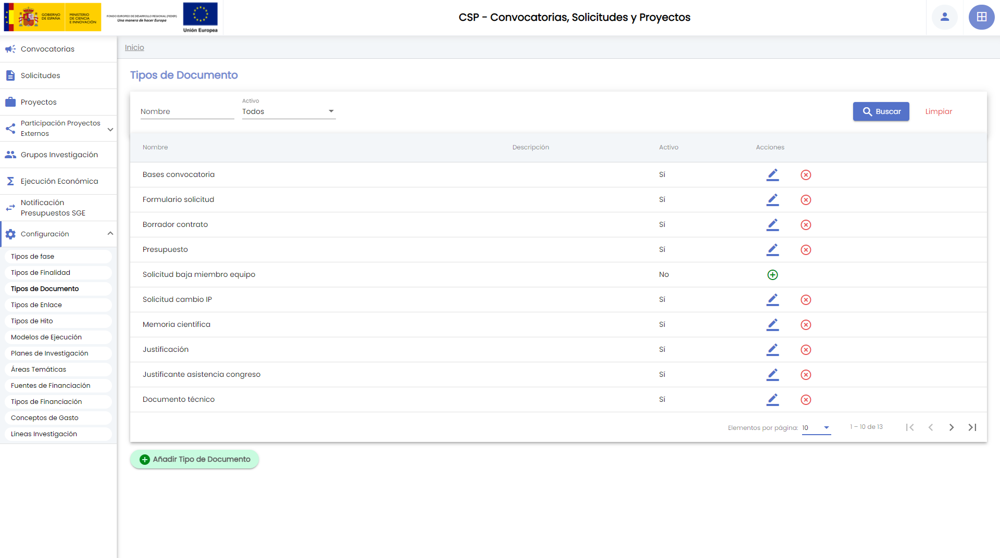
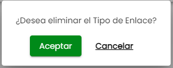

Hércules : CSP-Configuración¶
1. Introducción¶
El módulo CSP dispone de un apartado propio de configuración. Las opciones de configuración disponibles son:
- Tipos de fase
- Tipos de finalidad
- Tipos de documento
- Tipos de enlace
- Tipos de hito
- Modelos de ejecución
- Planes de investigación
- Áreas temáticas
- Fuentes de financiación
- Tipos de financiación
- Conceptos de gasto
- Líneas de investigación
Todas las opciones están disponibles para los usuarios con rol "administrador" de todas las unidades de gestión que tengan habilitado este módulo. Para el rol "gestor" de cualquier unidad de gestión para la que esté habilitado este módulo, las opciones disponibles de configuración son:
- Planes de investigación
- Áreas temáticas
- Fuentes de financiación
- Líneas de investigación
Vista general del menú Configuración para un rol "administrador":

Vista general del menú Configuración para un rol "gestor":

Existen una serie de listados cuya configuración debe ser realizada por el personal técnico durante el proceso de implantación del SGI y que solo podrán ser modificados por el personal técnico. Estos listados, que son utilizados en diferentes apartados del módulo CSP, son:
- Unidades de gestión
- Ámbito geográfico
- Régimen de concurrencia
- Origen de fuente de financiación
- Roles de los equipos de proyecto
- Roles de los socios de proyecto
2. Tipos de fase¶
Los tipos de fase forman parte de los modelos de ejecución. A través de los modelos de ejecución los tipos de fase estarán disponibles para la introducción de datos de las convocatorias y proyectos.
La configuración de los tipos de fase está restringida para el rol "administrador" del módulo CSP. Los tipos de fase son comunes para todas las unidades de gestión, de esta forma se evita la repetición y se homogeneiza la gestión.
Con la configuración de los tipos de fase se dota al SGI de la capacidad de personalización y adaptación a los procesos de gestión interna de cada Universidad y/o a la naturaleza de diferentes convocatorias, proyectos o contratos. El SGI no limita qué fases de una convocatoria, proyecto o contrato se permiten registrar sino que son las unidades de gestión responsables las que deciden conjuntamente que plazos o fases desean dejar registrados, y además pueden hacerlo progresivamente adaptándose a la necesidad cambiante en la gestión de convocatorias, proyectos y contratos.
En el menú Tipos de fase se realiza la gestión del listado de tipos de fase. Estos tipos deben de ser añadidos posteriormente a los modelos de ejecución en los que apliquen, para que estén disponibles en las convocatorias y proyectos.
2.1 Listado y buscador de tipos de fase¶
Al acceder a la opción Tipos de fase, se listarán los tipos de fase existentes que se encuentren activos. Ejemplo:

En el momento de configuración inicial del SGI este listado estará vacío.
El buscador de Tipos de fase es un buscador muy sencillo, tan solo dispone de los filtros "Nombre" y "Activo". Por defecto, el filtro "activo" está precargado con el valor "sí", de forma que los tipos de fase que se muestran son solamente aquellos que se encuentran "activos". Tras pulsar el botón "buscar" se muestra el listado con los tipos de fase que cumplen la búsqueda.
Si el filtro "activo" se establece al valor "no" se mostrarán los tipos de fase que hayan sido eliminados ("desactivados").

Si el filtro "activo" se establece al valor "todos" se muestran todos los tipos de fase, activos y no activos (o eliminados).
El listado de tipos de fase puede ser ordenado por las tres columnas: "nombre", "descripción" y "activo". Para ello basta pulsar sobre el título de la columna.
2.2 Añadir tipo de fase¶
El botón "añadir tipo de fase" permite crear un nuevo tipo de fase, para ello se muestra una ventana donde deben ser introducidos los datos del tipo de fase:
Será obligatorio la introducción del nombre del tipo de fase. Hasta que este campo obligatorio no se cumplimente, no se activará el botón "Añadir". Además de ser obligatorio, el campo nombre no puede coincidir con el nombre de un tipo de fase que se encuentre activo. Si así ocurriese se mostraría un mensaje de error, tal que:

Sí se podría indicar un nombre de tipo de fase que coincidiese con un tipo de fase que se hubiese eliminado (desactivado) previamente.
Introducido el nombre y descripción (opcional) se debe pulsar el botón "Añadir".
El nuevo tipo de fase será creado, mostrando un mensaje informativo. El nuevo tipo de fase estará disponible en el listado de tipos de fase.
Si se pulsa el botón "Cancelar" la ventana de creación se cerrará y no se creará el nuevo tipo de fase.
2.3 Modificar tipo de fase¶
Desde el listado de tipos de fase se podrán modificar los datos de un tipo de fase concreto. Para ello se pulsará el icono asociado a la acción "modificar". Se mostrará una ventana con el detalle del tipo de fase:

Se podrá modificar cualquiera de los campos "nombre" y "descripción". Como en el caso de la creación, será obligatorio introducir el campo nombre que no debe coincidir con el nombre de cualquier otro tipo de fase que se encuentre activa.

Introducidos los cambios en los campos nombre y/o descripción se debe pulsar el botón "aceptar" para que los cambios queden almacenados. Se mostrará un mensaje informativo confirmando que el tipo de fase ha sido modificado correctamente.
Si se pulsa el botón "Cancelar" se cierra la ventana de modificación sin que se guarden los cambios.
2.4 Eliminar tipo de fase¶
La entidad tipo de fase es una de las que admite recuperación. La acción de eliminación es realmente una "desactivación".
La acción eliminar solo estará disponible sobre los tipos de fase activos.
Al pulsar la acción "eliminar" se mostrará un mensaje de confirmación para verificar la acción:

Si se pulsa el botón "aceptar" sobre este mensaje de confirmación, el tipo de fase será "desactivado" que, a efectos prácticos, es como si se hubiera eliminado pues dejará de estar disponible para ser configurado en los nuevos modelos de ejecución así como para registrar las fechas correspondientes a la fase en convocatorias y proyectos. Se mostrará un mensaje informativo confirmando que el tipo de fase ha sido desactivado.

Si se pulsa el botón "Cancelar" el mensaje de confirmación se cerrará y el tipo de fase permanecerá activo (no será eliminado).
2.5 Recuperar tipo de fase¶
Los tipos de fase eliminados ("desactivados") puede ser reactivos (recuperados). La acción "recuperar" solamente estará disponible sobre los tipos de fase que se encuentren desactivados, es decir, que hubieran sido eliminados previamente. Para que estos registros se muestren en el listado, debe forzarse la búsqueda, de forma que se especifique el valor "no" o el valor "todos" en el campo de filtro "activo".
Tras pulsar el botón "recuperar" se mostrará un mensaje de confirmación:

Antes de realizar la reactivación de un tipo de fase se comprobará que no exista un tipo de fase activo con el mismo nombre. En caso de que esto fuese así, se mostrará el siguiente mensaje de error:
Si la recuperación se realiza correctamente se mostrará un mensaje informativo:

Si se pulsa el botón "Cancelar" la ventana de confirmación se cerrará y el tipo de fase permanecerá desactivado.
3. Tipos de finalidad¶
Los tipos de finalidad sirven como clasificación de las convocatorias y de los proyectos/contratos. El SGI no impone el ámbito o contexto que debe de utilizarse para definir esta clasificación, la naturaleza de la misma puede ser libremente definida por cada Universidad. Los elementos de esta clasificación pueden ampliarse, modificarse o reducirse a criterio de las unidades de gestión. Con la configuración de los tipos de finalidad se dota al SGI de la capacidad de personalización y adaptación a los procesos de gestión interna de cada Universidad y/o a la naturaleza de diferentes convocatorias, proyectos, contratos y convenios.
La configuración de los tipos de finalidad está restringida para el rol "administrador" del módulo CSP. Los tipos de finalidad son comunes para todas las unidades de gestión, de esta forma se evita la repetición y se homogeneiza la gestión y la explotación de resultados.
Los tipos de finalidad forman parte de los modelos de ejecución. A través de los modelos de ejecución los tipos de finalidad estarán disponibles para la introducción de datos de las convocatorias y proyectos/contratos.
En el menú Tipos de finalidad simplemente se crean los elementos de esta clasificación. Cada tipo de finalidad definido debe de ser añadido posteriormente a los modelos de ejecución en los que aplique, para que así esté disponible para clasificar convocatorias y proyectos/contratos.
3.1 Listado y buscador de tipos de finalidad¶
Al acceder a la opción de menú Configuración - Tipos de finalidad se mostrará el listado de los tipos de finalidad activos. Ejemplo:
En el momento de la configuración inicial del SGI este listado estará vacío.
El buscador de Tipos de finalidad es un buscador muy sencillo, tan solo dispone de los filtros "Nombre" y "Activo". Por defecto, el filtro "activo" está precargado con el valor "sí", de forma que los tipos de finalidad que se muestren serán aquellos que se encuentran "activos". Puede modificarse el valor de esta filtro a "no" o a "todos", así como especificar una cadena de texto en el filtro "nombre". Indicados los valores de los filtros se debe pulsar el botón "Buscar" para que se realice la búsqueda. Se actualizará el listado de tipos de finalidad mostrando aquellos que cumplen los criterios establecidos.
Siguiendo el comportamiento general de los filtros sobre los campos de texto, para realizar búsquedas por el campo "nombre" no será necesario especificar un nombre completo, podrá introducirse una parte de cadena de texto. La búsqueda devolverá cualquier tipo de finalidad que contenga la cadena introducida. Ejemplo:
Si el filtro "activo" se establece al valor "no" se mostrarán los tipos de finalidad que hayan sido eliminados ("desactivados").

Si el filtro "activo" se establece al valor "todos" se mostrarán tanto los tipos de finalidad "activos" como los "no activos" (eliminados):

El listado de tipos de finalidad puede ser ordenado por las tres columnas: "nombre", "descripción" y "activo". Para ello basta pulsar en el título de la columna. El ejemplo mostrado a continuación establece la ordenación por el campo "activo":
3.2 Añadir tipo de finalidad¶
El botón "Añadir Tipo de Finalidad" permite crear un nuevo tipo de finalidad. Tras pulsar el botón se muestra la ventana para la introducción de datos:
Los campos de un tipo de finalidad son:
- Nombre. Es un campo obligatorio. Debe ser único. No se permite la existencia de dos tipos de finalidad activos con el mismo nombre.
- Descripción. Es un campo opcional.
Hasta que no se cumplimente el campo "nombre" no se activará el botón "Añadir".
En caso que se introduzca un nombre para el tipo de finalidad que ya exista y esté activo, se mostrará un mensaje de error.

Si la operación de creación finaliza satisfactoriamente la ventana de creación se cerrará automáticamente y se mostrará un mensaje informativo.
Si se pulsa el botón "Cancelar" la ventana de creación se cerrará y no se creará el nuevo tipo de finalidad.
3.3 Modificar tipo de finalidad¶
La modificación de un tipo de finalidad se realizará a través del icono correspondiente a la acción modificar disponible en el listado de tipos de finalidad. Se mostrará la ventana de modificación, que contendrá precargados los datos actuales del tipo de finalidad seleccionado:

Hasta que no se introduzcan cambios en alguno de los campos no se activará el botón "Aceptar". En la modificación aplicará la misma restricción que impide que existan dos tipos de finalidad activos con el mismo nombre.
Introducidos los cambios deseados sobre cualquiera de los campos "nombre" y "descripción" se debe pulsar el botón "Aceptar". Si la operación se realiza correctamente se muestra un mensaje informativo.

Si se pulsa el botón "Cancelar" se cierra la ventana de modificación sin que se guarden los cambios.
3.4 Eliminar tipo de finalidad¶
La entidad tipo de finalidad es una de las que admite recuperación. La acción de eliminación es realmente una "desactivación".

La acción eliminar solo estará disponible sobre los tipos de finalidad activos.
Tras pulsar la acción eliminar se mostrará un mensaje de confirmación:
En caso de pulsar el botón "Aceptar", el tipo de finalidad será eliminado (desactivado), mostrándose un mensaje informativo:

Cuando se desactiva un tipo de finalidad dejará de estar disponible para ser configurado en los nuevos modelos de ejecución, lo que supondrán que no pueda ser utilizado para realizar la clasificación de las nuevas convocatorias y proyectos/contratos.
Si se pulsa el botón "Cancelar" la ventana del mensaje de confirmación se cerrará y el tipo de finalidad no será eliminado.
3.5 Recuperar tipo de finalidad¶
Los tipos de finalidad eliminados ("desactivados") puede ser reactivos (recuperados). La acción "recuperar" solamente estará disponible sobre los tipos de finalidad que se encuentren desactivados, es decir, que hubieran sido eliminados previamente. Para que estos registros se muestren en el listado, debe forzarse la búsqueda especificando el valor "no" o el valor "todos" en el campo de filtro "activo".
Tras pulsar el botón "recuperar" se mostrará un mensaje de confirmación:

Si se pulsa el botón "Aceptar" el tipos de finalidad volverá a estar activo, pudiendo volver a asignarse a los modelos de ejecución y, por tanto, pudiendo ser utilizado para la clasificación de convocatorias y proyectos/contratos. Si la reactivación es correcta se mostrará un mensaje informativo:
Antes de realizar la reactivación de un tipo de finalidad se comprobará que no exista un tipo de finalidad activo con el mismo nombre. En caso de que esto fuese así, se mostrará el siguiente mensaje de error:
Si se pulsa el botón "Cancelar" la ventana de confirmación se cerrará y el tipo de finalidad permanecerá desactivado.
4. Tipos de documento¶
Los tipos de documento sirven como clasificación de los documentos de las convocatorias, solicitudes y de los proyectos/contratos. Es una tipología orientada a identificar los documentos de acuerdo a su contenido. Los elementos tipos utilizados para definir esta clasificación pueden ampliarse, modificarse o reducirse a criterio de las unidades de gestión.
La configuración de los tipos de documento está restringida para el rol "administrador" del módulo CSP. Los tipos de documento son comunes para todas las unidades de gestión, de esta forma se evita la repetición y se homogeneiza la gestión y la explotación de resultados.
Los tipos de documento forman parte de los modelos de ejecución. A través de los modelos de ejecución los tipos de documento estarán disponibles para clasificar los documentos de las convocatorias, las solicitudes y los proyectos/contratos.
En el menú Tipos de documento simplemente se crean los elementos de esta clasificación. Cada tipo de documento definido debe de ser añadido posteriormente a los modelos de ejecución en los que aplique, para que así esté disponible para clasificar los documentos de convocatorias, solicitudes y proyectos/contratos.
4.1 Listado y buscador de tipos de documento¶
Al acceder a la opción de menú Configuración - Tipos de documento se mostrará el listado de los tipos de documento activos. Ejemplo:

En el momento de la configuración inicial del SGI este listado estará vacío.
El buscador de Tipos de documento es un buscador básico, tan solo dispone de los filtros "Nombre" y "Activo". Por defecto, el filtro "activo" está precargado con el valor "sí", de forma que los tipos de documento que se muestren serán aquellos que se encuentran "activos". Puede modificarse el valor de esta filtro a "no" o a "todos", así como especificar una cadena de texto en el filtro "nombre". Indicados los valores de los filtros se debe pulsar el botón "Buscar" para que se realice la búsqueda. Se actualizará el listado de tipos de documento mostrando aquellos que cumplen los criterios establecidos.
Siguiendo el comportamiento general de los filtros sobre los campos de texto, para realizar búsquedas por el campo "nombre" no será necesario especificar un nombre completo, podrá introducirse una parte de cadena de texto. La búsqueda devolverá cualquier tipo de documento que contenga la cadena introducida. Ejemplo:
Si el filtro "activo" se establece al valor "no" se mostrarán los tipos de documento que hayan sido eliminados ("desactivados").
Si el filtro "activo" se establece al valor "todos" se mostrarán tanto los tipos de documento "activos" como los "no activos" (eliminados):

El listado de los tipos de documento puede ser ordenado por cualquiera de sus tres columnas: "nombre", "descripción" y "activo".

4.2 Añadir tipo de documento¶
El botón "Añadir tipo de documento" dará paso a la ventana de creación de un nuevo tipo de documento.
Para crear un nuevo tipo de documento solamente son necesarios dos campos, uno de ellos opcional:
- Nombre. Es el nombre identificativo del tipo de documento. El nombre que se mostrará en todos los desplegables que se utilizarán posteriormente para clasificar los documentos. Es un campo obligatorio y debe de ser único. No se permitirá que dos tipos de documento que estén activos tengan el mismo nombre.
- Descripción. Es la descripción del tipo de documento. Es un campo opcional.
Hasta que no se introduzca un valor en el campo "nombre" el botón "Añadir" no se habilitará.

Tras pulsar el botón añadir, si no se presenta ningún error, se mostrará un mensaje informativo y el nuevo tipo de documento pasará a estar disponible para su utilización.

Si se pulsa el botón "Cancelar" se cerrará la ventana de creación y no se realizará la operación.
Si se introduce un nombre que ya está siendo utilizado se mostrará un mensaje de error:
Se deberá introducir un nuevo nombre o bien cancelar la creación, cerrando así la ventana.
4.3 Modificar tipo de documento¶
A través del icono de la acción modificar disponible en el listado de tipos de documento, se mostrará la ventana que permitirá modificar un tipo de documento:
Hasta que se introduzca ningún cambio en alguno de los dos campos el botón "Aceptar" permanecerá deshabilitado.

Tras pulsar el botón "Aceptar" se realizará la operación de modificación. Si esta finaliza correctamente se mostrará un mensaje informativo:
Si se pulsa el botón "Cancelar" se cerrará la ventana de modificación y no se guardarán los cambios introducidos sobre el tipo de documento.
4.4 Eliminar tipo de documento¶
La entidad tipo de documento es una de las que admite recuperación de los elementos eliminados. Aunque la acción de eliminación es realmente una "desactivación", un tipo de documento eliminado dejará de estar disponible para su uso en los modelos de ejecución y por consiguiente en las convocatorias, solicitudes y proyectos/contratos.
La acción eliminar solo estará disponible sobre los tipos de finalidad activos.
Tras pulsar la acción eliminar se mostrará un mensaje de confirmación:
Si se pulsa el botón "Aceptar" se confirma la eliminación. Se mostrará un mensaje informativo cuando ésta haya finalizado:

Si se pulsa el botón "Cancelar" se anula la petición de eliminación, y el tipo de documento permanecerá activo.
4.5 Recuperar tipo de documento¶
Los tipos de documento eliminados ("desactivados") puede ser reactivos (recuperados). La acción "recuperar" solamente estará disponible sobre los tipos de documento que se encuentren desactivados, es decir, que hubieran sido eliminados previamente. Para que estos registros se muestren en el listado debe forzarse la búsqueda especificando el valor "no" o el valor "todos" en el campo de filtro "activo".
Al pulsar la acción de recuperar se mostrará un mensaje de confirmación:
Si se pulsa el botón "Aceptar" se confirmará la acción. Se mostrará un mensaje informativo cuando ésta haya finalizado.
Si se pulsa el botón "Cancelar" se cancelará la recuperación, y el tipo de documento permanecerá desactivado.
Al recuperar un tipo de documento se comprobará si ya existe un tipo activo con el mismo nombre, si es así se mostrará un mensaje de error tras la acción de recuperación:
5. Tipos enlace¶
Los tipos de enlace componen un listado para clasificar los enlaces a páginas web que se proporcionan como información adicional en la información de las convocatorias. Desde la opción Configuración - Tipos de enlace se accede al listado de los tipos de enlace configurados. La configuración de los tipos de enlace solo está disponible para el rol "administrador". Los tipos de enlace son comunes a todas las unidades de gestión, esto evitará la repetición de los tipos y permitirá un tratamiento homogéneo de los mismos.
Los tipos de enlace forman parte de los modelos de ejecución. A través de los modelos de ejecución los tipos de documento estarán disponibles para clasificar las direcciones web aportadas en las convocatorias como información adicional.
En el menú Tipos de enlace simplemente se crean los elementos de esta clasificación. Cada tipo de enlace definido debe de ser añadido posteriormente a los modelos de ejecución en los que aplique, para que así esté disponible para clasificar los enlaces de las convocatorias
5.1 Listado y buscador de tipos de enlace¶
Al acceder a la opción de menú Configuración - Tipos de enlace se mostrará el listado de los tipos de enlace activos. Ejemplo:
En el momento de la configuración inicial del SGI este listado estará vacío.
El buscador de Tipos de enlace dispone de los filtros "Nombre" y "Activo". Por defecto, el filtro "activo" está precargado con el valor "sí", de forma que los tipos de enlace que se muestren serán aquellos que se encuentran "activos". Puede modificarse el valor de esta filtro a "no" o a "todos", así como especificar una cadena de texto en el filtro "nombre". Indicados los valores de los filtros se debe pulsar el botón "Buscar" para que se realice la búsqueda. Se actualizará el listado de tipos de enlace mostrando aquellos que cumplen los criterios establecidos.
Siguiendo el comportamiento general de los filtros sobre los campos de texto, para realizar búsquedas por el campo "nombre" no será necesario especificar un nombre completo, podrá introducirse una parte de cadena de texto. La búsqueda devolverá cualquier tipo de enlace que contenga la cadena introducida. Ejemplo:

5.2 Añadir tipo de enlace¶
El botón "Añadir tipo de enlace" dará paso a la ventana de creación de un nuevo tipo de enlace.
Los campos de los que consta un tipo de enlace son:
- Nombre. Es el nombre identificativo del tipo de enlace. El nombre que se mostrará en el desplegables que se utilizará posteriormente para clasificar las direcciones web aportadas como información en las convocatorias. Es un campo obligatorio y debe de ser único. No se permitirá que dos tipos de enlace que estén activos tengan el mismo nombre.
- Descripción. Es la descripción del tipo de enlace. Es un campo opcional.
El botón "Añadir" no se habilitará hasta que se haya introducido algún valor en el campo "nombre".

Introducidos los datos, se debe pulsar el botón "Añadir" para que el tipo de enlace pase a formar parte del listado de tipos de enlace disponible. Si el tipo de enlace se crea correctamente se mostrará un mensaje informativo:
Si se pulsa el botón "Cancelar" se cerrará la ventana de creación y el nuevo tipo de enlace no será creado.
En caso de introducir un nombre que ya estuviese en uso, el nuevo tipo de enlace no podrá ser creado, mostrándose un mensaje de error:

5.3 Modificar tipo de enlace¶
A través del icono de la acción modificar disponible en el listado de tipos de enlace, se mostrará la ventana que permitirá modificar un tipo de enlace:

Se pueden modificar cualquiera de los dos campos, "nombre" y "descripción". Hasta que no se introduzca algún cambio sobre alguno de los dos campos el botón "aceptar" no estará habilitado.
Si se pulsa el botón "Cancelar" se cerrará la ventana de modificación sin que los cambios introducidos sean considerados.
5.4 Eliminar tipo de enlace¶
La entidad tipo de enlace admite "recuperación". La eliminación es realmente una "desactivación", si bien a efectos prácticos la acción eliminar supone que el tipo de enlace deje de estar disponible para su utilización sobre los modelos de ejecución y convocatorias.
La acción eliminar estará disponible en el listado de tipos de enlace, sobre aquellos que se encuentren activos.
Al pulsar el botón eliminar se mostrará un mensaje de confirmación:
Si se pulsa el botón "Aceptar" se confirmará la eliminación. Una vez realizada se mostrará un mensaje informativo:

Si se pulsa el botón "Cancelar" se cerrará la ventana de confirmación y el tipo de enlace no será eliminado.
5.5 Recuperar tipo de enlace¶
Para recuperar un tipo de enlace eliminado se debe realizar la búsqueda de los tipos de enlace utilizando el campo "Activo" del filtro de búsqueda, especificando el valor "no" o "todos".
La única opción disponible sobre un tipo de enlace eliminado será la acción de recuperar. Al pulsar el icono "recuperar" se mostrará un mensaje de confirmación:

Si se pulsa el botón "Aceptar" se confirmará la recuperación (activación). Se mostrará un mensaje informativo cuando se haya producido.
Si se pulsa el botón "Cancelar" se cerrará la ventana de confirmación y el tipo de enlace no será recuperado.
Si se intenta recuperar un tipo de enlace que tenga un nombre que ya esté siendo utilizado en un tipo de enlace activo, se mostrará un mensaje de error:
6. Tipos de hito¶
Los tipos de hito conforman un listado que puede ser utilizado de forma genérica en convocatorias, solicitudes y/o proyectos/contratos para recoger cualquier evento o acontecimiento, pasado o futuro, que interese mantener en su historial.
Los tipos de hito forman parte de los modelos de ejecución. A través de los modelos de ejecución los tipos de fase estarán disponibles para la introducción de datos de las convocatorias, solicitudes y proyectos/contratos.
La configuración de los tipos de hitos está restringida para el rol "administrador" del módulo CSP. Los tipos de hito son comunes para todas las unidades de gestión, de esta forma se evita la repetición y se consigue un tratamiento homogéneo de la información.
Con la configuración de los tipos de hito, junto con el resto de tipos que conforman los modelos de ejecución, se dota al SGI de la capacidad de personalización y adaptación a los procesos de gestión interna de cada Universidad y/o a la naturaleza de diferentes convocatorias, solicitudes proyectos o contratos. El SGI no limita qué hitos de una convocatoria, solicitud, proyecto/contrato se permiten registrar sino que son las unidades de gestión responsables las que deciden conjuntamente que eventos desean dejar registrados, y además pueden hacerlo progresivamente adaptándose a la necesidad cambiante en la gestión de convocatorias, solicitudes proyectos y contratos.
En el menú Tipos de hito se realiza la gestión general del listado de tipos hitos. Estos tipos deben de ser añadidos posteriormente a los modelos de ejecución en los que apliquen y a partir de los modelos de ejecución estarán disponibles para la introducción de datos en convocatorias, solicitudes y proyectos.
6.1 Listado y buscador de tipos de hito¶
Al acceder a la opción Tipos de hito, se listarán los tipos de hito que se encuentren activos. Ejemplo:
En el momento de la configuración inicial del SGI el listado estará vacío.
El listado cuenta con un buscador que permite aplicar filtros sobre el mismo. Este buscador cuenta con filtros por los campos "nombre" y "activo". Por defecto, el filtro "activo" estará establecido al valor "sí" para que solo se muestren los elementos vigentes. Puede modificarse el valor de esta filtro a "no" o a "todos", así como especificar una cadena de texto en el filtro "nombre". Indicados los valores de los filtros se debe pulsar el botón "Buscar" para que se realice la búsqueda. Se actualizará el listado de tipos de hito mostrando aquellos que cumplen los criterios establecidos.
Siguiendo el comportamiento general de los filtros sobre los campos de texto, para realizar búsquedas por el campo "nombre" no será necesario especificar un nombre completo, podrá introducirse una parte de cadena de texto. La búsqueda devolverá cualquier tipo de hito que contenga la cadena introducida. Ejemplo:
6.2 Añadir tipo de hito¶
El botón "Añadir tipo de hito" dará paso a la ventana de creación de un nuevo elemento del listado.

Los campos disponibles para crear un nuevo tipo de hito son:
- Nombre. Es el nombre identificativo del tipo de hito. El nombre que se mostrará en los desplegable que se utilizarán posteriormente para registros hitos sobre convocatorias, solicitudes o proyectos/contratos. Es un campo obligatorio y debe de ser único. No se permitirá que dos tipos de hito que estén activos tengan el mismo nombre.
- Descripción. Es la descripción del tipo de hito. Es un campo opcional.
El botón "Añadir" no se habilitará hasta que se haya introducido algún valor en el campo "nombre".

Introducido el valor sobre el campo "nombre" se deberá pulsar el botón "Añadir" para que el tipo de hito pase a formar parte del listado. Se mostrará un mensaje informativo

Si se pulsa el botón "Cancelar" se cerrará la ventana y se descartará la creación del nuevo tipo de hito.
En caso que el nombre introducido ya esté en uso sobre un tipo de hito activo, se mostrará un mensaje de error y el nuevo elemento no será creado.
6.3 Modificar tipo de hito¶
A través del icono de la acción modificar disponible en el listado de tipos de hito, se mostrará la ventana que permitirá modificar un tipo de hito:
Se podrá modificar el valor de cualquiera de los dos campos: "nombre" y "descripción". Hasta que no se introduzcan cambios en alguno de los campos no se activará el botón "Aceptar"
Para que los cambios sean almacenados se debe de pulsar el botón "Aceptar". Se mostrará un mensaje informativo:

Si se pulsa el botón "Cancelar" se cerrará la ventana de modificación y los cambios no serán considerados.
6.4 Eliminar tipo de hito¶
La entidad tipo de hito admite "recuperación". La eliminación es realmente una "desactivación", si bien a efectos prácticos la acción eliminar supone que el tipo de hito dejará de estar disponible para su utilización sobre los modelos de ejecución y, con ello, en convocatorias, solicitudes y proyectos.
La acción eliminar estará disponible en el listado de tipos de hito, sobre aquellos que se encuentren activos.
Al pulsar el icono de la acción eliminar se mostrará un mensaje de confirmación:

Si se pulsa el botón "Aceptar" se efectuará la desactivación del tipo de hito, dejando de estar disponible para su asignación a los modelos de ejecución y para su uso en convocatorias, solicitudes y proyectos. Se mostrará un mensaje informativo.
Si se pulsa el botón "Cancelar" no se realizará la desactivación y el tipo de hito seguirá estando disponible.
6.5 Recuperar tipo de hito¶
Para recuperar un tipo de hito previamente eliminado se debe realizar la búsqueda utilizando el campo "Activo" del filtro de búsqueda, especificando el valor "no" o "todos".
La única opción disponible sobre un tipo de hito eliminado será la acción de recuperar. Al pulsar el icono "recuperar" se mostrará un mensaje de confirmación:
Si se pulsa el botón "Aceptar" se confirmará la acción y el tipo de hito volverá a estar disponible. Se mostrará un mensaje informativo:
Si se pulsa el botón "Cancelar" se cerrará la ventana de confirmación y el tipo de hito no será recuperado, seguirá sin estar disponible para ser utilizado en modelos de ejecución, convocatorias, solicitudes y proyectos.
En caso que el tipo de hito a recuperar tuviera un nombre que ya estuviese siendo utilizado por un tipos de hito activo, no podrá ser recuperado y se mostrará un mensaje de error:
7. Modelos de ejecución¶
A efectos prácticos los modelos de ejecución son una clasificación para las actividades de investigación en concreto para las convocatorias, solicitudes y proyectos/contratos que se registran en el SGI. Es una clasificación puede ser creada libremente por el personal de gestión y que se puedes ir adaptando en base a las necesidades cambiantes que exigen los mecanismos de financiación y gestión de la investigación.
Los modelos de ejecución son una clasificación pero además tienen la particularidad de disponer de una serie de listados asociados. Cuando se construyó el SGI se identificó que la heterogeneidad de convocatorias y proyectos podría hacer necesario que algunos de sus apartados de datos no fuesen fijos sino que pudiesen ser configurables. Así, en algunos tipos de convocatorias o proyectos podría ser necesario, por ejemplo, registrar unas fechas o tipos de documentos que no significasen nada en otros tipos de proyectos o convocatorias. En base a esto se introducen en el SGI una serie de listados, que también serán configurables. Estos listados son:
- Tipos de fases
- Tipos de finalidad
- Tipos de documentos
- Tipos de enlaces
- Tipos de hitos
Y forman parte de los modelos de ejecución.
Por tanto, se puede decir que los modelos de ejecución son una clasificación para ser utilizada en las convocatorias, solicitudes y proyectos que agrupa, a su vez, una serie de listados que estarán disponibles en las convocatorias, solicitudes y proyectos de acuerdo al modelo de ejecución al que se asocien éstos. Con esto, aunque en primaria instancia los modelos de ejecución son una clasificación o tipificación para las convocatorias y proyectos/contratos van a permitir adaptar la forma en que se recogen los datos de unos determinados apartados de las convocatorias, solicitudes y proyectos/contratos, de forma que los listados que estarán disponibles en estos apartados van a variar de una convocatoria, solicitud o proyecto a otro en función del modelo de ejecución al que se vinculen.
Los modelos de ejecución permiten:
- Clasificar las convocatorias y proyectos/contratos.
- Homogeneizar la introducción de información en convocatorias, solicitudes y proyectos/contratos, porque aunque se adapten los listados en base a la que se recogen los datos, siempre se recogerán con una estructura común.
- Particularizar determinados apartados de información de las convocatorias, solicitudes y proyectos/contratos en función de su naturaleza y/o de los procedimientos internos que el Servicio de Investigación o Unidades de gestión establezcan para realizar la gestión.
El SGI no impone los criterios en base a los que se debe definir esta clasificación, cada Universidad puede definir los modelos de ejecución que mejor se adapten a sus necesidades.
La configuración de los modelos de ejecución está restringida para el rol "administrador" del módulo CSP.
Los modelos de ejecución son comunes para todas las unidades de gestión, de esta forma se evita la repetición y se consigue un tratamiento homogéneo de la información, sin embargo, cada modelo de ejecución estará habilitados para una o varias unidades de gestión. Es decir, se puede limitar la disponibilidad de los modelos de ejecución para las diferentes unidad de gestión.
Para crear una convocatoria o proyecto/contrato será obligatorio que se indique el modelo de ejecución. Los modelos de ejecución disponibles dependerán de la unidad o unidades de gestión a las que esté vinculada la persona que está creando la convocatoria o el proyecto/contrato. Una vez asignado el modelo de ejecución estarán disponibles sus tipos de fase, hitos, documentos, enlaces y finalidades en los apartados que correspondan.
7.1 Modelos de ejecución - Listado y buscador¶
Al acceder a la opción Modelos de Ejecución, se listarán los modelos que se encuentren activos. Ejemplo:

En el momento de la configuración inicial del SGI el listado estará vacío.
El listado cuenta con un buscador que permite aplicar filtros sobre el mismo. Este buscador cuenta con filtros por los campos "nombre" y "activo". Por defecto, el filtro "activo" estará establecido al valor "sí" para que solo se muestren los elementos vigentes. Puede modificarse el valor de este filtro a "no" o a "todos", así como especificar una cadena de texto en el filtro "nombre". Indicados los valores de los filtros se debe pulsar el botón "Buscar" para que se realice la búsqueda. Se actualizará el listado de modelos de ejecución mostrando aquellos que cumplen los criterios establecidos.
Siguiendo el comportamiento general de los filtros sobre los campos de texto, para realizar búsquedas por el campo "nombre" no será necesario especificar un nombre completo, podrá introducirse una parte de cadena de texto. La búsqueda devolverá cualquier modelo de ejecución que contenga la cadena introducida. Ejemplo:
7.2 Añadir modelo de ejecución¶
Para crear un nuevo modelo de ejecución se debe de pulsar el botón "Añadir modelo de ejecución". La entidad "modelo de ejecución" es una entidad compleja que tiene unos datos generales y una serie de relaciones con otras entidades del SGI por lo que el botón "Añadir modelo de ejecución" supondrá un cambio de contexto, pasando a mostrar el detalle del modelo de ejecución, que estará estructurado en varias pestañas o apartados de información:
- Datos generales
- Tipos de fase
- Tipos de documento
- Tipos de enlace
- Tipos de finalidad
- Tipos de hito
- Unidades de gestión
7.2.1 Modelo de ejecución - Datos generales¶
Es la pantalla inicial de un modelo de ejecución, en ella se recogen los siguientes campos:
- Nombre
- Descripción
- Indicador de si el modelo de ejecución se utilizará para representar contratos del artículo 83 o convenios.
- Indicador de si el modelo de ejecución se utilizará para representar proyectos externos. Son proyectos en los que participa personal de investigación de la Universidad pero que se desarrollan bajo la titularidad de otra Universidad o entidad externa.
El único campo obligatorios para crear un modelo de ejecución será el campo "Nombre".
Si los indicadores "externo" y "contrato" no se marcan, se sobreentiende que el modelo de ejecución a crear no se utilizará prear representar proyectos externos ni contratos/convenios.
El campo "nombre" ha de ser único entre los modelos de ejecución que se encuentren activos. En caso de introducir un nombre que ya está en uso se mostrará un mensaje de error tras pulsar el botón "Guardar modelo de ejecución".

Al tratarse de una entidad compleja, el botón "Guardar modelo de ejecución" afectará a todas las pestañas, guardando simultáneamente todos los datos introducidos en cualquiera de ellas. Cada vez que se añada algún dato en cualquiera de los apartados se mostrará el mensaje de advertencia mientras no se pulse el botón "Guardar modelo de ejecución".
7.2.2 Modelo de ejecución - Tipos de fase¶
En este apartado se configurarán los tipos de fase que se añaden al modelo de ejecución. Los tipos de fase que están disponibles para ser añadidos a un modelo de ejecución deben haber sido configurados previamente a través de la opción de menú Configuración - Tipo de fase. No es obligatorio que un modelo de ejecución tenga tipos de fase, pero deben de añadirse en caso de que se pretenda recoger datos en los apartados de fases de las convocatorias y proyectos/contratos asociados al modelo de ejecución que se está configurando.
7.2.2.1 Listar tipos de fase de un modelo de ejecución¶
Al acceder al menú o pestaña "Tipos de fase" de un modelo de ejecución, se listarán los tipos de fase añadidos al mismo.
Inicialmente el modelo no tendrá ningún tipo de fase:

7.2.2.2 Añadir tipo de fase a un modelo de ejecución¶
Para añadir un tipo de fase se debe de pulsar el botón "Añadir tipo de fase", se mostrará una ventana emergente:

En esta ventana se deberá indicar:
- Tipo de fase. Es un campo obligatorio. Se debe seleccionar un tipo de fase disponible en el listado que se mostrará al pulsar en el control .
- La entidad o entidades en las que se va a utilizar el tipo de fase: convocatorias o proyectos. Se ha de indicar al menos una pero se podrían indicar las dos. Es decir, un tipo de fase puede ser utilizado tanto en convocatorias como en proyectos.

Hasta que no se seleccione un tipo de fase y se marque al menos uno de los check "convocatorias" o "proyectos", no se habilitará el botón "Añadir".

Si se pulsa el botón "Cancelar" se cerrará la ventana sin añadir el tipo de fase al modelo de ejecución.
Si se pulsa el botón "Añadir" se añadirá el tipo de fase al listado de fases del modelo de ejecución:
El tipo de fase añadido se mostrará en listado del apartado Tipos de fase del modelo de ejecución, pero aún deberá realizarse el guardado del modelo de ejecución, a través del botón "Guardar modelo de ejecución". No es necesario realizar el guardado del modelo de ejecución cada vez que se añada un tipo de fase, pueden seguir añadiéndose nuevos tipos de fase o cualquier cambio en el resto de pestañas del modelo de ejecución, y pulsar el botón "Guardar modelo de ejecución" cuando hayan sido introducidos todos los cambios. Se mostrará el mensaje de advertencia sobre el apartado "Tipos de fase" recordando que existen cambios sin guardar. Como en todas las entidades complejas aplica lo recogido de forma general en MDU - Manual de usuario - 3.13 Añadir nuevo elemento.
No se permite añadir el mismo tipo de fase dos veces sobre el mismo modelo de ejecución. Una vez que un tipo de fase ha sido añadido al modelo de ejecución, éste se mostrará en tono gris en el desplegable disponible en la ventana para añadir un nuevo tipo de fase (puede apreciarse en la siguiente imagen para el tipo de fase "Presentación interna de solicitudes"):
Si lo que se quiere hacer es modificar la configuración sobre el modelo de ejecución de ese tipo de fase ya añadido (por ejemplo para cambiarle la configuración para habilitarlo sobre convocatorias y/o proyectos), se debe acceder a su modificación desde el listado de tipos de fase del modelo de ejecución (Ver Modificar tipo de fase de un modelo de ejecución).
# Crear un nuevo tipo de fase¶
Si al desplegar los tipos de fase disponibles para añadir un tipo de fase al modelo de ejecución se detecta que aún no ha sido creado el tipo de fase que se desea añadir, se podrá utilizar el control  disponible en el propio desplegable. El control es un acceso directo a la creación de un nuevo tipo de fase (Ver Añadir nuevo tipo de fase) disponible en el menú Configuración - Tipos de fase. Este control solo estará disponible si se dispone de permisos de "administrador csp". Este control sigue el comportamiento general descrito en MDU - Manual de usuario - 3.17 - Controles sobre campos desplegables o selectores.
disponible en el propio desplegable. El control es un acceso directo a la creación de un nuevo tipo de fase (Ver Añadir nuevo tipo de fase) disponible en el menú Configuración - Tipos de fase. Este control solo estará disponible si se dispone de permisos de "administrador csp". Este control sigue el comportamiento general descrito en MDU - Manual de usuario - 3.17 - Controles sobre campos desplegables o selectores.
Una vez creado el nuevo tipo de fase, se deberá volver a desplegar el listado Tipo de fase de la ventana inicial:
El nuevo tipo de fase aparecerá ya incluido en el listado de opciones disponibles.
# Refrescar tipos de fase¶
En caso que el nuevo tipo de fase recién añadido no se muestre en el listado directamente, se deberá pulsar el control refrescar  disponible sobre el desplegable, y a continuación volver a desplegar el listado. Este caso se daría cuando la creación del tipo de fase hubiera sido realizado por otra persona (con rol administrador) en este mismo periodo de tiempo. Este control sigue el comportamiento general descrito en MDU - Manual de usuario - 3.17 - Controles sobre campos desplegables o selectores.
disponible sobre el desplegable, y a continuación volver a desplegar el listado. Este caso se daría cuando la creación del tipo de fase hubiera sido realizado por otra persona (con rol administrador) en este mismo periodo de tiempo. Este control sigue el comportamiento general descrito en MDU - Manual de usuario - 3.17 - Controles sobre campos desplegables o selectores.

7.2.2.3 Modificar tipo de fase de un modelo de ejecución¶
La modificación de los tipos de fase añadidos a un modelo de ejecución se realizará haciendo uso de la acción "modificar" disponible en el listado de tipos de ejecución.
Al pulsar el icono de modificación se mostrará la ventana de detalle del tipo de fase:

Desde esta ventana se permitirá modificar la asociación del tipo de fase a convocatorias o proyectos. Hasta que no se introduzca un cambio no se activará el botón "Aceptar".
7.2.2.4 Eliminar un tipo de fase de un modelo de ejecución¶
La eliminación de un tipo de fase añadida a un modelo de ejecución se realizará desde el listado de tipos de fase del modelo de ejecución:
Tras pulsar la acción "eliminar" se mostrará un mensaje de confirmación:

Si se pulsa el botón "Cancelar" la ventana se cerrará y no se realizará la acción.
Si se pulsa el botón "Aceptar" el tipo de fase se eliminará del listado de tipos de fase del modelo de ejecución.

El tipo de fase eliminado desaparecerá del listado de tipos de fase del modelo de ejecución, pero no tendrá efecto hasta que no se realice el guardado del modelo de ejecución. Se mostrará la advertencia de cambios pendientes de guardar sobre la opción de menú Tipos de fase recordando que el modelo de ejecución debe ser guardado. Al pulsar este botón se guardarán todos los cambios pendientes sobre cualquier apartado del modelo. Ver MDU - Manual de usuario - 3.13 Añadir nuevo elemento o MDU - Manual de usuario - 3.8 - Editar o modificar elemento.
7.2.3 Modelo de ejecución - Tipos de documento¶
En este apartado se configurarán los tipos de documento que se añaden al modelo de ejecución. Los tipos de documento que están disponibles para ser añadidos a un modelo de ejecución deben haber sido configurados previamente a través de la opción de menú Configuración - Tipo de documento. No es obligatorio que un modelo de ejecución tenga tipos de documento, pero deben de añadirse en caso de que se pretenda clasificar los documentos que se añadan a las convocatorias, solicitudes o proyectos/contrato vinculados al modelo de ejecución que se está configurando.
7.2.3.1 Listar tipos de documento de un modelo de ejecución¶
Al acceder al menú o pestaña "Tipos de documento" de un modelo de ejecución, se listarán los tipos de documento añadidos al mismo.
Tras crear un nuevo modelo de ejecución, el listado de tipos de documento estará vacío:
Cuando ya se hubieran añadido tipos de documento al modelo de ejecución, el listado tendrá este aspecto:
7.2.3.2 Añadir tipo de documento a un modelo de ejecución¶
Para añadir un tipo de documento al modelo de ejecución se deberá pulsar el botón "Añadir tipo de documento". Se mostrará una nueva ventana que tendrá el siguiente aspecto:

Hasta que no se introduzca alguno de los campos no se activará el botón "añadir". Los campos disponibles son:
- Tipo de documento. Es un campo obligatorio.
- Tipo de fase. Es un campo opcional.
Un tipo de documento puede quedar limitado a ser utilizado en unas fases concretas de las que hubieran sido añadidas al modelo de ejecución. En caso que no se indique ningún tipo de fase, el tipo de documento estará habilitado para todas las fases añadidas al modelo de ejecución. Si un tipo de documento fue añadido al modelo especificando un tipo de fase concreta, podrá volver a ser añadido para otros tipos de fase, pero no podrá volver a ser añadido con el tipo de fase vacío. Para hacer esto debería eliminarse todas las apariciones del tipo de documento en el modelo y volver a añadirlo sin tipo de fase.
La vinculación de los tipos de documento a tipos de fase permite componer una estructura organizativa en la vista del árbol de documentos de las convocatorias, solicitudes y proyectos. Se podría decir que el tipo de fase actúa como la carpeta de primer nivel en el árbol de documentos y el tipo de documento como las carpetas de segundo nivel.
El campo tipo de documento es de obligada cumplimentación. Es un desplegable que mostrará los tipos de documento activos que hubieran sido configurados desde el menú Configuración - Tipos de documento.
El comportamiento del desplegable Tipo de documento sigue las pautas establecidas en MDU - Manual de usuario - 3.17 Controles sobre campos desplegables o selectores.
Cuando un tipos de documento no pueda ser añadido al modelo de ejecución, bien porque haya sido añadido sin especificar ninguna fase bien porque haya sido añadido ya para todas las fases del modelo, el tipo de documento se mostrará en el listado del desplegable pero no será seleccionable. Para ello se representará en un tono gris claro y no podrá ser seleccionado (sirva como muestra el tipo de documento "borrador contrato" de la imagen adjunta):

El campo tipo de fase es opcional. En caso de no cumplimentarse supondrá que el tipo de documento no pertenecerá a una fase concreta que, a efectos prácticos, supondrá que carezca de esa clasificación de primer nivel al ser mostrado en el árbol de documentos de convocatorias, solicitudes y proyectos. Para más detalle, consultar por ejemplo el apartado CSP-Proyectos- 4.16 Documentos.
Los tipos de fase disponibles para añadir un tipo de documento al modelo de ejecución, serán los tipos de fase que previamente se hubieran configurado al modelo de ejecución en el apartado Modelo de ejecución - Tipo de fase. Como no es obligatorio asociar el tipo de documento a un tipo de fase concreta se dispone de una opción "sin valor".

En el caso de que el tipo de documento ya estuviese asociado a un tipo de fase concreta, ésta ya no se mostrará en el listado de fases disponibles, al igual que tampoco se mostrará la fase "vacía", puesto que un tipo de documento puede estar asociado a diferentes fases o a ninguna, pero en el momento que está asociado a una fase concreta ya no se podrá asociar a la fase vacía.

Si un modelo de ejecución aún no tiene configurado ningún tipo de fase el listado se mostrará vacío.
Una vez indicados el tipo de documento, con su opción o no de especificar un tipo de fase, se activará el botón "Añadir"

Si se pulsa el botón "Cancelar" se cerrará la ventana y no se añadirá el tipo de documento al modelo de ejecución.
Si se pulsa el botón "Añadir" el tipo de documento será añadido al listado de tipos de documento del modelo de ejecución, cerrándose la ventana de creación.
Siguiendo el comportamiento general de las entidades complejas hasta que no se pulse el botón "Guardar modelo de ejecución" el tipo de documento añadido no serán guardados. Se mostrará la advertencia de cambios pendientes de guardar sobre la opción de menú Tipos de documento recordando que el modelo de ejecución debe ser guardado. Se guardarán todos los cambios pendientes sobre cualquier apartado del modelo. Ver MDU - Manual de usuario - 3.13 Añadir nuevo elemento o MDU - Manual de usuario - 3.8 - Editar o modificar elemento.
7.2.3.3 Eliminar un tipo de documento de un modelo de ejecución¶
La opción para eliminar un tipo de documento de un modelo de ejecución se encuentra disponible en el listado de tipos de documento:
Al pulsar el icono de acción "Eliminar" sobre un tipo de documento concreto se mostrará un mensaje de confirmación
Si se pulsa el botón "Cancelar" el mensaje de confirmación se cerrará y el tipo de documento permanecerá asociado al modelo.
Si se pulsa el botón "Aceptar" el mensaje de confirmación se cerrará y el tipo de documento ya no estará asociado al modelo.

Siguiendo el comportamiento general de las entidades complejas hasta que no se pulse el botón "Guardar modelo de ejecución" no se eliminará definitivamente el tipo de documento del modelo. Se mostrará la advertencia de cambios pendientes de guardar sobre la opción de menú Tipos de documento recordando que el modelo de ejecución debe ser guardado. Al pulsar este botón se guardarán todos los cambios pendientes sobre cualquier apartado del modelo. Ver MDU - Manual de usuario - 3.13 Añadir nuevo elemento o MDU - Manual de usuario - 3.8 - Editar o modificar elemento.
7.2.4 Modelo de ejecución - Tipos de enlace¶
En este apartado se configurarán los tipos de enlace del modelo de ejecución. Los tipos de enlaces que están disponibles para ser añadidos a un modelo de ejecución deben haber sido configurados previamente a través de la opción de menú Configuración - Tipos de enlace. No es obligatorio que un modelo de ejecución tenga tipos de enlaces, pero deben de añadirse en caso de que se pretenda clasificar los enlaces que se añadan a las convocatorias vinculadas al modelo de ejecución que se está configurando.
7.2.4.1 Listar tipos de enlace de un modelo de ejecución¶
Al acceder a la opción "Tipos de enlace" del menú de la entidad modelo de ejecución se mostrará el listado de los tipos de enlace que se hubiesen añadido al modelo.
En el momento inicial de creación del modelo de ejecución, el listado de tipos de enlace estará vacío.
7.2.4.2 Añadir tipos de enlace de un modelo de ejecución¶
Para añadir un tipo de enlace al modelo se pulsará el botón "Añadir tipo de enlace". Se mostrará la ventana de creación. El único campo necesario y obligatorio es el propio tipo de enlace.

El campo Tipo de enlace sigue el comportamiento global de los campos desplegables descrito en MDU - Manual de usuario - 3.17 - Controles sobre campos desplegables o selectores.
Los tipos de enlace disponible deben haber sido configurados previamente a través de la opción de menú Configuración - Tipos de enlace. No se podrá añadir dos veces el mismo tipo de enlace al modelo de ejecución. Los tipos de enlace ya añadidos al modelo se mostrará en el listado en color gris claro y no serán seleccionables.
Hasta que no se introduzca un valor en el campo "Tipo de enlace" el botón "Añadir" no estará activo.
Si se pulsa el botón "Cancelar" se cerrará la ventana y el tipo de enlace no será añadido al modelo de ejecución.
Si se pulsa el botón "Añadir" se cerrará la ventana y el tipo de enlace será añadido al modelo de ejecución, mostrándose en el listado de enlaces del modelo.
Siguiendo el comportamiento general de las entidades complejas hasta que no se pulse el botón "Guardar modelo de ejecución" el tipo de enlace añadido no serán guardado. Se mostrará la advertencia de cambios pendientes de guardar sobre la opción de menú Tipos de enlace recordando que el modelo de ejecución debe ser guardado. Se guardarán todos los cambios pendientes sobre cualquier apartado del modelo. Ver MDU - Manual de usuario - 3.13 Añadir nuevo elemento o MDU - Manual de usuario - 3.8 - Editar o modificar elemento.
7.2.4.3 Eliminar tipos de enlace de un modelo de ejecución¶
La opción para eliminar un tipo de enlace de un modelo de ejecución se encuentra disponible en el listado de tipos de enlace:
Al pulsar el icono de acción eliminar sobre un tipo de enlace concreto, se mostrará un mensaje de confirmación:

Si se pulsa el botón "Cancelar" el mensaje de confirmación se cerrará y el tipo de enlace permanecerá asociado al modelo.
Si se pulsa el botón "Aceptar" el mensaje de confirmación se cerrará y el tipo de enlace ya no estará asociado al modelo.

Siguiendo el comportamiento general de las entidades complejas hasta que no se pulse el botón "Guardar modelo de ejecución" no se eliminará definitivamente el tipo de enlace del modelo. Se mostrará la advertencia de cambios pendientes de guardar sobre la opción de menú Tipos de enlace recordando que el modelo de ejecución debe ser guardado. Al pulsar este botón se guardarán todos los cambios pendientes sobre cualquier apartado del modelo. Ver MDU - Manual de usuario - 3.13 Añadir nuevo elemento o MDU - Manual de usuario - 3.8 - Editar o modificar elemento.
7.2.5 Modelo de ejecución - Tipos de finalidad¶
En este apartado se configurarán los tipos de finalidad del modelo de ejecución. Los tipos de finalidad que están disponibles para ser añadidos a un modelo de ejecución deben haber sido configurados previamente a través de la opción de menú Configuración - Tipos de finalidad. No es obligatorio que un modelo de ejecución tenga tipos de finalidad, pero deben de añadirse en caso de que se pretenda clasificar las convocatorias y proyectos vinculadas al modelo de ejecución que se está configurando.
El tipo de finalidad es una clasificación común a todas los modelos de ejecución. Un mismo tipo de finalidad puede estar asociado a varios modelos de ejecución.
7.2.5.1 Listar tipos de finalidad de un modelo de ejecución¶
Al acceder a la opción "Tipos de finalidad" dentro del menú modelo de ejecución se mostrará el listado de los tipos de finalidad que se hubiesen añadido al modelo.
En el momento inicial de creación del modelo de ejecución, el listado de tipos de enlace estará vacío.
7.2.5.2 Añadir tipos de finalidad de un modelo de ejecución¶
Para añadir un tipo de finalidad al modelo se pulsará el botón "Añadir tipo de finalidad". Se mostrará la ventana de creación. El único campo necesario y obligatorio es el propio tipo de finalidad.
El campo Tipo de finalidad sigue el comportamiento global de los campos desplegables descrito en MDU - Manual de usuario - 3.17 - Controles sobre campos desplegables o selectores.
Los tipos de finalidad disponible deben haber sido configurados previamente a través de la opción de menú Configuración - Tipos de finalidad. No se podrá añadir dos veces el mismo tipo de finalidad al modelo de ejecución. Los tipos de finalidad ya añadidos al modelo se mostrará en el listado en color gris claro y no serán seleccionables.
Hasta que no se introduzca un valor en el campo "Tipo de finalidad" el botón "Añadir" no estará activo.

Si se pulsa el botón "Cancelar" se cerrará la ventana y el tipo de finalidad no será añadido al modelo de ejecución.
Si se pulsa el botón "Añadir" se cerrará la ventana y el tipo de finalidad será añadido al modelo de ejecución, mostrándose en el listado de tipos de finalidad del modelo.

Siguiendo el comportamiento general de las entidades complejas hasta que no se pulse el botón "Guardar modelo de ejecución" el tipo de finalidad añadido no serán guardado. Se mostrará la advertencia de cambios pendientes de guardar sobre la opción de menú Tipos de finalidad recordando que el modelo de ejecución debe ser guardado. Se guardarán todos los cambios pendientes sobre cualquier apartado del modelo. Ver MDU - Manual de usuario - 3.13 Añadir nuevo elemento o MDU - Manual de usuario - 3.8 - Editar o modificar elemento.
7.2.5.3 Eliminar tipos de finalidad de un modelo de ejecución¶
La opción para eliminar un tipo de finalidad de un modelo de ejecución se encuentra disponible en el listado de tipos de finalidad:
Al pulsar el icono de acción eliminar sobre un tipo de finalidad concreto, se mostrará un mensaje de confirmación:

Si se pulsa el botón "Cancelar" el mensaje de confirmación se cerrará y el tipo de finalidad permanecerá asociado al modelo.
Si se pulsa el botón "Aceptar" el mensaje de confirmación se cerrará y el tipo de finalidad ya no estará asociado al modelo.

Siguiendo el comportamiento general de las entidades complejas hasta que no se pulse el botón "Guardar modelo de ejecución" no se eliminará definitivamente el tipo de finalidad del modelo. Se mostrará la advertencia de cambios pendientes de guardar sobre la opción de menú Tipos de finalidad recordando que el modelo de ejecución debe ser guardado. Al pulsar este botón se guardarán todos los cambios pendientes sobre cualquier apartado del modelo. Ver MDU - Manual de usuario - 3.13 Añadir nuevo elemento o MDU - Manual de usuario - 3.8 - Editar o modificar elemento.
7.2.6 Modelo de ejecución - Tipos de hito¶
En este apartado se configurarán los tipos de hitos del modelo de ejecución. Los tipos de hitos que están disponibles para ser añadidos a un modelo de ejecución deben haber sido configurados previamente a través de la opción de menú Configuración - Tipos de hito. No es obligatorio que un modelo de ejecución tenga tipos de hito, pero deben de añadirse en caso de que se pretendan utilizar en las convocatorias, solicitudes y proyectos vinculadas al modelo de ejecución que se está configurando.
El tipo de hito es una clasificación común a todos los modelos de ejecución. Un mismo tipo de hito puede estar asociado a varios modelos de ejecución, y dentro de un mismo modelo de ejecución puede ser utilizado para las convocatorias, las solicitudes y los proyectos indistinta y simultáneamente.
7.2.6.1 Listar tipos de hito de un modelo de ejecución¶
Al acceder a la opción "Tipos de hito" dentro del menú modelo de ejecución se mostrará el listado de los tipos de hito que se hubiesen añadido al modelo.
En el momento inicial de creación del modelo de ejecución, el listado de tipos de hito estará vacío.
7.2.6.2 Añadir tipos de hito de un modelo de ejecución¶
Para añadir un tipo de hito al modelo se pulsará el botón "Añadir tipo de hito". Se mostrará la ventana de creación. El único campo necesario y obligatorio es el propio tipo de hito y la entidad o entidades sobre las que aplicará (convocatoria, solicitud y/o proyecto).
El campo Tipo de hito sigue el comportamiento global de los campos desplegables descrito en MDU - Manual de usuario - 3.17 - Controles sobre campos desplegables o selectores.
Los tipos de hito disponibles deben haber sido configurados previamente a través de la opción de menú Configuración - Tipos de hito. No se podrá añadir dos veces el mismo tipo de hito al modelo de ejecución, aunque sí se permite que un mismo tipo de hito pueda estar presente tanto en convocatorias, como en solicitudes como en proyectos.. Los tipos de hito ya añadidos al modelo se mostrará en el listado en color gris claro y no serán seleccionables.

Hasta que no se introduzca un valor en el campo "Tipo de hito" y se haya marcado la entidad sobre la que aplicará, el botón "Añadir" no estará activo.

Si se pulsa el botón "Cancelar" se cerrará la ventana y el tipo de hito no será añadido al modelo de ejecución.
Si se pulsa el botón "Añadir" se cerrará la ventana y el tipo de hito será añadido al modelo de ejecución, mostrándose en el listado de tipos de hitos del modelo.
Siguiendo el comportamiento general de las entidades complejas hasta que no se pulse el botón "Guardar modelo de ejecución" el tipo de hito añadido no serán guardado. Se mostrará la advertencia de cambios pendientes de guardar sobre la opción de menú Tipos de hito recordando que el modelo de ejecución debe ser guardado. Se guardarán todos los cambios pendientes sobre cualquier apartado del modelo. Ver MDU - Manual de usuario - 3.13 Añadir nuevo elemento o MDU - Manual de usuario - 3.8 - Editar o modificar elemento.
7.2.6.3 Modificar lo tipos de hito de un modelo de ejecución¶
La opción para eliminar un tipo de hito de un modelo de ejecución se encuentra disponible en el listado de tipos de hito:
Al pulsar el icono de la acción de "modificar" se mostrará el detalle del tipo de hito

Solamente se podrá modificar la entidad o entidades sobre las que actúa. El botón "Aceptar" solo estará disponible cuando se hubiera realizado algún cambio sobre la configuración del tipo de hito:

Si se pulsa el botón "Cancelar" se cerrará la ventana y el tipo de hito no será modificado.
Si se pulsa el botón "Aceptar" se cerrará la ventana y las modificaciones en la configuración del tipo de hito serán consideradas.
Siguiendo el comportamiento general de las entidades complejas hasta que no se pulse el botón "Guardar modelo de ejecución" los cambios sobre el tipo de hito no serán guardados. Se mostrará la advertencia de cambios pendientes de guardar sobre la opción de menú Tipos de hito recordando que el modelo de ejecución debe ser guardado. Se guardarán todos los cambios pendientes sobre cualquier apartado del modelo. Ver MDU - Manual de usuario - 3.8 - Editar o modificar elemento.

7.2.6.4 Eliminar tipos de hito de un modelo de ejecución¶
La opción para eliminar un tipo de hito de un modelo de ejecución se encuentra disponible en el listado de tipos de hito:
Al pulsar el icono de acción eliminar sobre un tipo de hito concreto, se mostrará un mensaje de confirmación:

Si se pulsa el botón "Cancelar" el mensaje de confirmación se cerrará y el tipo de hito permanecerá asociado al modelo.
Si se pulsa el botón "Aceptar" el mensaje de confirmación se cerrará y el tipo de hito ya no estará asociado al modelo.

Siguiendo el comportamiento general de las entidades complejas hasta que no se pulse el botón "Guardar modelo de ejecución" no se eliminará definitivamente el tipo de hito del modelo. Se mostrará la advertencia de cambios pendientes de guardar sobre la opción de menú Tipos de hito recordando que el modelo de ejecución debe ser guardado. Al pulsar este botón se guardarán todos los cambios pendientes sobre cualquier apartado del modelo. Ver MDU - Manual de usuario - 3.13 Añadir nuevo elemento o MDU - Manual de usuario - 3.8 - Editar o modificar elemento.
7.2.7 Modelo de ejecución - Unidades de gestión¶
En este apartado se asociarán las unidades de gestión para las que estará disponible el modelo de ejecución. Las unidades de gestión disponibles deben haber sido configuradas por personal técnico en tiempo de implantación del SGI. Un modelo de ejecución puede estar disponible para varias unidades de gestión.
Una persona con perfil unidad de gestión podría estar asociado, en el SGI, a una o varias unidades de gestión. Cuando una persona accede al SGI se identifica su perfil de acceso sobre cada una de las unidades de gestión configuradas en el SGI. Los modelos de ejecución que tenga disponible una persona para realizar la gestión de convocatorias, solicitudes y proyectos serán los asociados a las unidades de gestión sobre las que disponga de un perfil de acceso.
7.2.7.1 Listar unidades de gestión de un modelo de ejecución¶
Al acceder a la opción "Unidades de gestión dentro del menú modelo de ejecución se mostrará el listado de las unidades de gestión para las que esté habilitado el modelo.
En el momento inicial de creación del modelo de ejecución, el listado de tipos de hito estará vacío.

7.2.7.2 Añadir unidades de gestión a un modelo de ejecución¶
Para añadir una unidad de gestión al modelo se pulsará el botón "Añadir unidad de gestión". Se mostrará la ventana de creación. El único campo necesario y obligatorio es la propia unidad de gestión.

El campo Unidad de gestión es un selector simple. Al pulsar sobre él se mostrará el listado de unidades de gestión disponibles. Una unidad de gestión solo podrá ser añadida una vez al modelo.
Hasta que no se seleccione una unidad de gestión, no se activará el botón "Añadir".

Si se pulsa el botón "Cancelar" se cerrará la ventana y la unidad de gestión no será añadida al modelo de ejecución.
Si se pulsa el botón "Añadir" se cerrará la ventana y la unidad de gestión será añadida al modelo de ejecución, mostrándose en el listado de unidades de gestión del modelo.
Siguiendo el comportamiento general de las entidades complejas hasta que no se pulse el botón "Guardar modelo de ejecución" la unidad de gestión no será guardada. Se mostrará la advertencia de cambios pendientes de guardar sobre la opción de menú Unidades de gestión recordando que el modelo de ejecución debe ser guardado. Se guardarán todos los cambios pendientes sobre cualquier apartado del modelo. Ver MDU - Manual de usuario - 3.13 Añadir nuevo elemento o MDU - Manual de usuario - 3.8 - Editar o modificar elemento.
7.2.7.3 Eliminar unidad de gestión de un modelo de ejecución¶
La opción para eliminar una unidad de gestión un modelo de ejecución se encuentra disponible en el listado de unidades de gestión:

Al pulsar el icono de acción eliminar sobre una unidad de gestión concreta, se mostrará un mensaje de confirmación:
Si se pulsa el botón "Cancelar" el mensaje de confirmación se cerrará y la unidad de gestión permanecerá asociada al modelo.
Si se pulsa el botón "Aceptar" el mensaje de confirmación se cerrará y la unidad de gestión ya no estará asociada al modelo.
Siguiendo el comportamiento general de las entidades complejas hasta que no se pulse el botón "Guardar modelo de ejecución" no se eliminará definitivamente la unidad de gestión del modelo. Se mostrará la advertencia de cambios pendientes de guardar sobre la opción de menú Unidades de gestión recordando que el modelo de ejecución debe ser guardado. Al pulsar este botón se guardarán todos los cambios pendientes sobre cualquier apartado del modelo. Ver MDU - Manual de usuario - 3.13 Añadir nuevo elemento o MDU - Manual de usuario - 3.8 - Editar o modificar elemento.
7.3 Modificar modelo de ejecución¶
La modificación de un modelo de ejecución se realizará pulsando el icono "modificar" disponible en el listado de modelos:
Tras pulsar el icono de acción "modificar" sobre el modelo deseado, se mostrará el detalle del mismo en el apartado "Datos generales", pudiendo acceder al resto de apartados para realizar las modificaciones oportunas.
Sobre cada apartado aplicarán las mismas restricciones indicadas en el proceso de creación de un nuevo modelo de ejecución. Además, en el caso de la modificación aplican las siguientes condiciones en el apartado "Datos generales":
Los checks "Externo" y "Contrato" no podrán ser modificados cuando ya existan proyectos asociados al modelo de ejecución.
Hasta que no se introduzcan algún cambio no se activará el botón "Guardar modelo de ejecución". Siguiendo el comportamiento general de las entidades complejas hasta que no se pulse el botón "Guardar modelo de ejecución" no se guardarán definitivamente los cambios sobre el modelo. Se mostrará la advertencia de cambios pendientes de guardar sobre los apartados en los que se hayan introducido modificaciones recordando que el modelo de ejecución debe ser guardado. Al pulsar este botón se guardarán todos los cambios pendientes sobre cualquier apartado del modelo. Ver MDU - Manual de usuario - 3.8 - Editar o modificar elemento.
7.4 Eliminar modelo de ejecución¶
La eliminación de un modelo de ejecución se realizará pulsando el icono "eliminar" disponible en el listado de modelos:
La entidad modelo de ejecución es una de las que admite reactivación, por lo que se regirá por la operativa común descrita en MDU - Manual de usuario - 3.10 Eliminar elemento y MDU - Manual de usuario - 3.11 Recuperar elemento, de acuerdo a esto tras pulsar el icono de acción "eliminar" se mostrará el mensaje de confirmación:
Si se pulsa el botón "Cancelar" se cerrará la ventana y no se realizará la desactivación del modelo.
Si se pulsa el botón "Aceptar" se cerrará la ventana y se realizará la desactivación del modelo, mostrando un mensaje de confirmación tras finalizar la operación
Desactivar un modelo de ejecución implicará que el modelo no esté disponible para ser asociado a las nuevas convocatorias y proyectos/contratos, pero no supondrá la eliminación de las convocatorias y proyectos/contratos que ya estuvieran asociados al mismo, que podrán seguir gestionándose en el SGI.
7.5 Recuperar modelo de ejecución¶
La recuperación o reactivación de un modelo de ejecución se realizará desde el listado de modelos de ejecución, debiendo establecer el valor "Todos" o "No" en el filtro "Activo"

Siguiendo la operativa común MDU - Manual de usuario - 3.11 Recuperar elemento, tras pulsar el icono de acción "recuperar", se mostrará un mensaje de confirmación.
Si se pulsa el botón "Cancelar" se cerrará la ventana y el modelo seguirá desactivado.
Si se pulsa el botón "Aceptar" se cerrará la ventana y el modelo pasará a estar activo. Se mostrará un mensaje de confirmación al finalizar la acción:
8. Planes de investigación¶
El SGI permite la libre creación de planes de investigación, entendidos éstos como los planes estratégicos d bajo los que se engloban las ayudas a través de las que las diferentes entidades fomentan la actividad investigadora.
El SGI permite la creación de los planes de investigación con su estructura jerárquica de programas, subprogramas, modalidades, submodalidades, topcis, etc. Esta estructura jerárquica recibe el nombre de "árbol de programas" del plan de investigación, haciendo referencia a que no hay una limitación del número de elementos en los que se puede llegar a descomponer cada programa del plan de investigación.
Los planes y programas de investigación permitirán clasificar las convocatorias y proyectos de acuerdo al plan de ayuda bajo el que se ejecutan. Se asociarán a las convocatorias y proyectos a través de una entidad convocante, de forma que una entidad está asociada a una convocatoria/proyecto a través de un plan de investigación.
Para cada Plan de investigación que se cree, la unidad de gestión podrá decidir incluir el desglose completo del árbol de programas o, por el contario, incluir simplemente el programa/subprograma/modalidad con el que se corresponde la convocatoria/proyecto.
Un plan/programa puede ser asociado a varias convocatorias, siempre vinculado a una entidad convocante. Las unidades de gestión decidirán con qué nivel del árbol de programas vinculan la convocatoria, teniendo en cuenta que si se vincula, por ejemplo, con un programa y éste tiene definidos en el árbol una serie de subprogramas y modalidades o topics, se sobreentenderá que todos quedarán cubiertos en la convocatoria.
La gestión de planes de investigación está disponible para los perfiles "administrador" y "gestor" del módulo de CSP. Los planes de investigación definidos son comunes para todas las unidades de gestión.
8.1 Listado y buscador de planes de investigación¶
Siguiendo el comportamiento general del SGI tras acceder al menú "Planes de investigación" se mostrará el listado de planes de investigación activos.
En el momento inicial de la implantación del SGI el listado estará vacío

El buscador de Planes de investigación dispone de los filtros "Nombre" y "Activo". Por defecto, el filtro "activo" está precargado con el valor "sí", de forma que los planes de investigación que se muestran son solamente aquellos que se encuentran "activos". Tras pulsar el botón "buscar" se muestra el listado con los planes que cumplen la búsqueda.
Si el filtro "activo" se establece al valor "no" se mostrarán los planes de investigación que hayan sido eliminados ("desactivados").

Si el filtro "activo" se establece al valor "todos" se muestran todos los planes de investigación, activos y no activos (o eliminados).
El listado de planes de investigación puede ser ordenado por las tres columnas: "nombre del plan", "descripción" y "activo". Para ello basta pulsar sobre el título de la columna.
8.2 Añadir nuevo plan de investigación¶
Para añadir un nuevo plan de investigación se pulsará el botón "Añadir plan de investigación" situado en el pie de página de la pantalla inicial del buscador y listado de planes de investigación.
Al pulsar este botón se mostrará la pantalla de detalle de un Plan de investigación. La entidad Plan de investigación es una entidad que dispone de dos apartados:
- Datos generales
- Programas
8.2.1 Datos generales¶

En el apartado Datos generales se introducirá el nombre del plan y su descripción, siendo el nombre del plan el único campo obligatorio.

Introducido el nombre del plan se puede optar por guardar los cambios, botón "Guardar plan de investigación" o bien continuar con el desglose de programas.
Como en cualquier entidad compleja el botón "Guardar plan de investigación" almacenará todos los cambios introducidos tanto sobre la pestaña "Datos generales" como sobre "Programas".
8.2.2 Programas¶
En el apartado "Programas" se realizará la descomposición del Plan de investigación en programas, subprogramas, modalidades, submodalidades, topics, etc. Como se indicó con anterioridad el SGI no limita cuanto descomponer el plan, ni tampoco obliga a que se introduzca todos los programas. La unidad de gestión podría decidir incluir solamente los programas de acuerdo a las convocatorias/proyectos que vayan a ser gestionadas en el SGI.
Inicialmente el árbol de programas del plan estará vacío, mostrándose con el siguiente aspecto:

Se debe pulsar el botón "Añadir programa" para comenzar a introducir los programas del plan de investigación.
Tras pulsar el botón se habilitará en la zona derecha de la pantalla un espacio para introducir los datos del programa. Un programa queda definido por los campos:
- Nombre: es un campo obligatorio
- Descripción: es un campo opcional

Introducidos los datos del programa, y siempre que se haya introducido obligatoriamente el campo "nombre" se activará el botón "Aceptar". Tras pulsar este botón se cerrará la zona de introducción de datos del programa y éste pasará a mostrarse como elemento del árbol del plan del investigación.
Una vez que ha sido introducido algún elemento en el plan de investigación, el comportamiento del botón "Añadir programa" será ligeramente diferente. Tras pulsar este botón, se mostrará un casilla ("check") a la izquierda del nombre de cada programa:
Si se marca el check de un elemento ya incluido en el árbol, el nuevo programa se creará como un subprograma de éste:

Tras pulsar el botón "Aceptar" el nuevo subprograma se mostrará en el árbol de programas:

El botón "Añadir programa" tendrá el comportamiento descrito independientemente del número de elementos que ya hubieran sido introducidos sobre el árbol de programas. Sobre cada elemento introducido se mostrará, a su izquierda, el check que permitirá indicar el elemento bajo el que se desea crear el nuevo.

Si un programa ya contiene subprogramas se muestra el icono  a través del que se desplegarán los subprogramas:
a través del que se desplegarán los subprogramas:
Si antes de añadir un nuevo programa no se marca el check de ninguno de los elementos existentes, el programa se creará en el nivel inicial del árbol de programas:

En el ejemplo anterior se introduce un nuevo elemento pero sin marcar el "check" de ninguno de los elementos ya disponibles en el árbol de programas. En este caso al pulsar el botón "Aceptar", el nuevo elemento pasará a ser un programa de primer nivel del Plan de investigación:

Independientemente del número de elementos de los que vaya disponiendo el árbol de programas el comportamiento del botón "Añadir programa" seguirá siendo el mismo
Si el nuevo elemento se marca bajo un elemento "subprograma", el comportamiento será idéntico:

Tras pulsar el botón "Aceptar" el nuevo elemento se mostrará bajo el subprograma indicado:
Y así, de forma anidada, se irá construyendo el árbol de programas de un Plan de investigación, con el número de elementos y profundidad que la unidad de gestión estime oportuno en cada caso particular
Siguiendo el comportamiento general del SGI, todos los datos introducidos sobre el Plan de investigación no quedarán almacenados hasta que se pulse el botón "Guardar plan de investigación", con el que se guardarán simultáneamente los cambios pendiente tanto del apartado "Datos generales" como del apartado "Programas".

8.3 Modificar un plan de investigación¶
Desde el listado de planes de investigación, que se muestra al pulsar la opción de menú "Planes de investigación", está disponible la acción "modificar".
8.3.1 Datos generales¶
Al pulsar este icono de acción se muestra el detalle del plan de investigación seleccionado, pudiendo introducir los cambios oportunos sobre cualquiera de sus apartados: datos generales y programas.

Si se modifica el campo "nombre" del plan de investigación se verificará, además de que no quede vacío, que no exista ningún otro plan de investigación activo con el mismo nombre. Si se intenta dar al plan un nombre ya existente, se mostrará un mensaje de error:
8.3.2 Programas¶
Cuando se accede al árbol de programas de un plan de investigación ya creado se mostrarán visibles los programas de primer nivel.
La precedencia del icono en el nombre de un programa es indicativo de que éste se descompone en subprogramas, modalidades, etc. Al pulsar sobre este icono se desplegarán los elementos del programa:

Cuando un elemento está desplegado, le precede el icono . Si se pulsa sobre él se replegará el elemento:

Para ver el detalle y modificar un elemento del árbol de programas se pulsará sobre el icono  . Se mostrará el detalle del elemento en la parte derecha de la ventana, donde estarán disponibles los botones "Editar programa" y "Borrar programa".
. Se mostrará el detalle del elemento en la parte derecha de la ventana, donde estarán disponibles los botones "Editar programa" y "Borrar programa".
8.3.2.1 Editar programa¶
Al pulsar el botón "Editar programa", se podrán introducir cambios sobre cualquiera de los campos: "nombre" y "descripción".
Como en el caso de la creación de un nuevo programa:
- El campo nombre es obligatorio.
- Sobre el campo descripción no se aplica ninguna validación pudiendo quedar vacío.
Tras introducir los cambios se debe pulsar el botón Aceptar, permaneciendo en la pantalla de modificación.
En este punto podría continuarse con la visualización o modificación de cualquier otro elemento. Desde esta misma pantalla se permite:
- Volver a editarse o borrar el programa actual.
- Seleccionar otro elemento del árbol para su visualización.
- Añadir un nuevo programa. El comportamiento del botón "Añadir programa" es idéntico al comentado en el apartado de "Añadir nuevo plan de investigación".
- Guardar los cambios sobre el plan de investigación. Como siempre ningún cambio será definitivamente almacenado hasta que se pulse el botón "Guardar plan de investigación" que almacenará todos los cambios pendientes tanto de la pantalla "datos generales" como de la pantalla "programa".
8.3.2.2 Borrar programa¶
Desde el detalle de un programa (icono ) estará disponible el botón "Borrar programa".

Al pulsar este botón se mostrará un mensaje de confirmación
Si se pulsa el botón "Aceptar" el elemento eliminado ya no se mostrará en el árbol de programas:

Como siempre para que la eliminación no será definitivamente almacenada hasta que se pulse el botón "Guardar plan de investigación" que almacenará todos los cambios pendientes tanto de la pantalla "datos generales" como de la pantalla "programa". Tras pulsar el botón "Guardar" se mostrará un mensaje de confirmación
Los elementos del árbol de programas eliminados no podrán ser reactivados.
8.3.2.3 Añadir programas¶
Como parte de la modificación de un plan de investigación podrán añadirse nuevos programas. Para ello se hará uso del botón "Añadir programa".
El botón "Añadir programa" tendrá el mismo comportamiento que el indicado en el apartado "Añadir nuevo plan de investigación".
8.4 Eliminar un plan de investigación¶
La eliminación de un plan de investigación se realizará desde el listado inicial de planes, a través del icono de acción eliminar.
Tras pulsar la acción eliminar se mostrará un mensaje de confirmación:
Si se pulsa el botón "Aceptar", el plan de investigación será desactivado mostrándose un mensaje informativo:
Si se elimina (desactiva) un plan de investigación:
- Dejará de mostrarse en el listado de planes de investigación (salvo que se realice una búsqueda aplicando los filtros adecuados por el campo "activo").
- Dejará de estar disponible para poder ser utilizado en la gestión de convocatorias y proyectos.
8.5 Recuperar un plan de investigación¶
La entidad Plan de investigación admite recuperación (reactivación) de los elementos eliminados. Siguiendo el comportamiento general del SGI la recuperación se realizará desde el listado inicial de planes de investigación. Paras que se muestren los elementos desactivados se marcará la opción "todos" o "no" sobre el filtro "Activo":

Se pulsará el icono de acción "recuperar", mostrándose un mensaje de confirmación.
Si se pulsa el botón "Aceptar" se recuperará el plan de investigación, que volverá a estar disponible para uso en convocatorias y proyectos. Se mostrará un mensaje informativo cuando la operación haya finalizado.
Si se pulsa el botón "Cancelar" el plan de investigación seguirá desactivado.
9. Listados de áreas temáticas¶
El SGI permite la creación de listados de áreas temáticas. Los listados de áreas temáticas pueden ser utilizados en la creación de las convocatorias del SGI. Algunas convocatorias o, en general, determinadas agencias o entidades que tienen como misión promover la actividad investigadora, disponen de un listado de áreas temáticas bajo el que clasifican estas actividades. Con la gestión de áreas temáticas el SGI queda abierto a la incorporación de todos cuantos listados puedan ir surgiendo, pudiendo ser creados directamente por las propias unidades de gestión, sin que existan ningún límite de partida sobre el número de listados que pueden estar disponibles en cada momento o el número de elementos que contenga cada listado.
Cada convocatoria puede ser vinculada a un listado de áreas temáticas concreto, o incluso a un determinado subconjunto de áreas dentro de un listado particular (como se explicará en el apartado correspondiente del manual de usuario de Convocatorias).
Los listados de áreas temáticas del SGI tienen una estructura de árbol, similar a los planes de investigación.
La gestión de los listados de áreas temáticas está disponible para los perfiles "administrador" y "gestor" del módulo de CSP. Los listados de áreas temáticas definidos serán comunes para todas las unidades de gestión.
9.1 Listado y buscador de áreas temáticas¶
Desde la opción Áreas temáticas del menú configuración se mostrará el listado de áreas temáticas disponibles.

Se dispone de un buscador que incluye dos campos de filtrado:
- Nombre del listado de áreas temáticas.
- Activo. Por defecto este filtro está establecido al valor "sí" de forma que se listan solamente los listados de áreas temáticas activos.
Si el filtro "activo" se establece al valor "no" se mostrarán los listados de áreas temáticas que hayan sido eliminados ("desactivados"). Si el filtro "activo" se establece al valor "todos" se mostrarán todos los listados de áreas temáticas hayan sido o no eliminados ("desactivados").
El listado de áreas temáticas puede ser ordenado por los campos:
- Nombre
- Descripción
- Activo
Para ello basta con pulsar sobre el título de la columna.
En el momento inicial de la implantación el listado se mostrará vacío, debiendo utilizar el botón "Añadir área temática" para crear el primer listado.

9.2 Añadir un nuevo listado de áreas temáticas¶
Tras pulsar el botón "Añadir área temática" situado a pie del listado inicial se mostrará una nueva ventana con los apartados:
- Datos generales
- Árbol de áreas
9.2.1 Datos generales¶
En el apartado de datos generales se introducirán los datos principales del listado de áreas:
- Nombre del listado (campo "Área temática"). Es un campo obligatorio. No pueden existir dos listados de áreas temáticas activos con el mismo nombre.
- Descripción. Es un campo opcional que permite describir el listado de áreas temáticas.

Como en cualquier entidad compleja el botón "Guardar área temática" almacenará los cambios introducidos sobre cualquiera de los apartados "Datos generales" y "Árbol de áreas".
9.2.2 Árbol de áreas¶
En el apartado "Árbol de Áreas" se realizará la descomposición del listado de áreas temáticas, como en el caso de los programas de investigación, los listados de áreas temáticas tendrán una estructura jerárquica de árbol. De esta forma se podrán crear áreas y subáreas, sin ninguna limitación del número de niveles. No se definirán categorías a cada uno de los niveles del árbol. La información se presentará en formato de árbol, lo que ya permitirá conocer del nivel de la jerarquía. Esto dotará al SGI de mayor adaptabilidad a las diferentes casuísticas de las convocatorias.
Inicialmente el árbol de áreas de un nuevo listado estará vacío.
Se debe pulsar el botón "Añadir área temática" para comenzar a introducir las áreas del listado.

Tras pulsar el botón se habilitará en la zona derecha de la pantalla un espacio para introducir los datos de la área temática. Una área temática queda definida por los campos:
- Abreviatura: es un campo obligatorio y se comprobará su unicidad dentro del listado de áreas temáticas (entre los registros activos). No podrán existir dos áreas temáticas con la misma abreviatura y siendo activas las dos dentro del mismo árbol de áreas temáticas.
- Nombre: es un campo obligatorio y se comprobará su unicidad dentro del listado de áreas temáticas (entre los registros activos). No podrán existir dos áreas temáticas con el mismo nombre y siendo activas las dos dentro del mismo árbol de áreas temáticas.

Introducidos los datos de la área temática, y siempre que se haya introducido obligatoriamente los campos "abreviatura" y "nombre" se activará el botón "Aceptar". Tras pulsar este botón se cerrará la zona de introducción de datos de la área y éste pasará a mostrarse como elemento del árbol de áreas.

Una vez que ha sido introducido algún elemento en el árbol de áreas, el comportamiento del botón "Añadir área temática" será ligeramente diferente. Tras pulsar este botón, se mostrará un casilla ("check") a la izquierda del nombre de cada área:
Si se marca el check de un elemento ya incluido en el árbol, la nueva área temática se creará como una subárea de ésta:

Tras pulsar el botón "Aceptar", el área recién creada se mostrará en el árbol de áreas:
El botón "Añadir área temática" tendrá el comportamiento descrito independientemente del número de elementos que ya hubieran sido introducidos sobre el árbol de áreas. Sobre cada elemento introducido se mostrará, a su izquierda, el check que permitirá indicar el elemento bajo el que se desea crear el nuevo área.
Si una área ya contiene subáreas se muestra el icono a través del que se desplegarán las subáreas:
Si antes de añadir un nuevo área no se marca el check de ninguno de los elementos existentes, el área temática se creará en el nivel inicial del árbol de áreas:

En el ejemplo anterior se introduce un nuevo elemento pero sin marcar el "check" de ninguno de los elementos ya disponibles en el árbol de áreas. En este caso al pulsar el botón "Aceptar", el nuevo elemento pasará a ser un área de primer nivel del Listado de área temáticas:

Independientemente del número de elementos de los que vaya disponiendo el árbol de áreas el comportamiento del botón "Añadir área temática" seguirá siendo el mismo
Si el nuevo elemento se marca bajo un elemento "subárea", el comportamiento será idéntico:

Tras pulsar el botón "Aceptar" el nuevo elemento se mostrará bajo el subárea indicada:

Y así, de forma anidada, se irá construyendo el árbol de áreas de un Listado de áreas temáticas, con el número de elementos y profundidad que la unidad de gestión estime oportuno en cada caso particular.
Siguiendo el comportamiento general del SGI, todos los datos introducidos sobre el Listado de áreas temáticas no quedarán almacenados hasta que se pulse el botón "Guardar área temática", con el que se guardarán simultáneamente los cambios pendiente tanto del apartado "Datos generales" como del apartado "Árbol de áreas".

9.3 Modificar un listado de áreas temáticas¶
Desde el listado de áreas temáticas, que se muestra al pulsar la opción de menú "Áreas Temáticas", está disponible la acción "modificar".
9.3.1 Datos generales¶
Al pulsar este icono de acción se muestra el detalle del listado de áreas temáticas seleccionado, pudiendo introducir los cambios oportunos sobre cualquiera de sus apartados: datos generales y árbol de áreas.

Si se modifica el campo "área temática" (el nombre del área) se verificará, además de que no quede vacío, que no exista ningún otro listado de áreas temáticas activo con el mismo nombre. Si se intenta dar al listado de áreas temáticas un nombre ya existente, se mostrará un mensaje de error:
9.3.2 Árbol de Áreas¶
Cuando se accede al árbol de áreas de un listado de áreas temáticas ya creado se mostrarán visibles las áreas temáticas de primer nivel.

La precedencia del icono en el nombre de un área es indicativo de que ésta se descompone en subáreas. Al pulsar sobre este icono se desplegarán los elementos del área:

Cuando un elemento está desplegado, le precede el icono . Si se pulsa sobre él se replegará el elemento:
Para ver el detalle y modificar un elemento del árbol de áreas se pulsará sobre el icono . Se mostrará el detalle del elemento en la parte derecha de la ventana, donde estarán disponibles los botones "Editar área temática" y "Borrar área temática".

9.3.2.1 Editar área temática¶
Al pulsar el botón "Editar área temática", se podrán introducir cambios sobre cualquiera de los campos: "abreviatura" y "nombre".

Como en el caso de la creación de un nuevo área temática:
- Abreviatura: es un campo obligatorio y se comprobará su unicidad dentro del listado de áreas temáticas (entre los registros activos). No podrán existir dos áreas temáticas con la misma abreviatura y siendo activas las dos dentro del mismo árbol de áreas temáticas.
- Nombre: es un campo obligatorio y se comprobará su unicidad dentro del listado de áreas temáticas (entre los registros activos). No podrán existir dos áreas temáticas con el mismo nombre y siendo activas las dos dentro del mismo árbol de áreas temáticas.
Tras introducir los cambios se debe pulsar el botón Aceptar, permaneciendo en la pantalla de modificación.
En este punto podría continuarse con la visualización o modificación de cualquier otro elemento. Desde esta misma pantalla se permite:
- Volver a editarse o borrar la área temática actual.
- Seleccionar otro elemento del árbol para su visualización.
- Añadir una nueva área temática. El comportamiento del botón "Añadir área temática" es idéntico al comentado en el apartado de "Añadir un nuevo listado de áreas temáticas".
- Guardar los cambios sobre el listado de áreas temáticas. Como siempre ningún cambio será definitivamente almacenado hasta que se pulse el botón "Guardar área temática" que almacenará todos los cambios pendientes tanto de la pantalla "datos generales" como de la pantalla "árbol de áreas".
9.3.2.2 Borrar área temática¶
Desde el detalle de una área temática (icono ) estará disponible el botón "Borrar área temática".
Al pulsar este botón se mostrará un mensaje de confirmación
Si se pulsa el botón "Aceptar" el elemento eliminado ya no se mostrará en el árbol de áreas:
Como siempre para que la eliminación no será definitivamente almacenada hasta que se pulse el botón "Guardar área temática" que almacenará todos los cambios pendientes tanto de la pantalla "datos generales" como de la pantalla "árbol de áreas". Tras pulsar el botón "Guardar área temática" se mostrará un mensaje de confirmación
Los elementos del árbol de áreas eliminados no podrán ser reactivados.
9.3.2.3 Añadir áreas temáticas¶
Como parte de la modificación de un listado de áreas temáticas podrán añadirse nuevas áreas temáticas. Para ello se hará uso del botón "Añadir área temática".
El botón "Añadir área temática" tendrá el mismo comportamiento que el indicado en el apartado "Añadir un nuevo listado de áreas temáticas".
9.4 Eliminar un listado de áreas temáticas¶
La eliminación de un listado de áreas temáticas se realizará desde el listado inicial de grupos o listados de áreas temáticas, a través del icono de acción eliminar.
Tras pulsar la acción eliminar se mostrará un mensaje de confirmación:

Si se pulsa el botón "Aceptar", el listado o grupo de áreas temáticas será desactivado mostrándose un mensaje informativo:

Si se elimina (desactiva) un listado o grupo de áreas temáticas:
- Dejará de mostrarse en el listado de "Áreas Temáticas"(salvo que se realice una búsqueda aplicando los filtros adecuados por el campo "activo").
- Dejará de estar disponible para poder ser utilizado en la gestión de convocatorias y proyectos.
9.5 Recuperar un listado de áreas temáticas¶
La entidad Área temática admite recuperación (reactivación) de los elementos eliminados. Siguiendo el comportamiento general del SGI la recuperación se realizará desde el listado inicial de grupos o listados de áreas temáticas. Para que se muestren los elementos desactivados se marcará la opción "todos" o "no" sobre el filtro "Activo":
Se pulsará el icono de acción "recuperar", mostrándose un mensaje de confirmación.

Si se pulsa el botón "Aceptar" se recuperará el listado de áreas temáticas, que volverá a estar disponible para uso en convocatorias y proyectos. Se mostrará un mensaje informativo cuando la operación haya finalizado.

Si se pulsa el botón "Cancelar" el listado de áreas temáticas seguirá desactivado.
10. Fuentes de financiación¶
El SGI permite la configuración libre de fuentes de financiación. Las fuentes de financiación estarán asociadas a las convocatorias y proyectos a través de las entidades financiadoras. A través de las fuentes de financiación, las convocatorias y proyectos podrán ser tipificados de acuerdo a la procedencia de los fondos. La disponibilidad de una opción configuración para las mismas permite a las unidades de gestión ser autónomas en la introducción de nuevas fuentes sin necesidad de requerir adaptaciones o intervenciones de personal técnico sobre el SGI.
La gestión de las fuentes de financiación está disponible para los perfiles "administrador" y "gestor" del módulo de CSP.
El listado de fuentes de financiación es común a todas las unidades de gestión.
10.1 Listado y buscador de fuentes de financiación¶
Al acceder a la opción Fuentes de financiación, se listarán las fuentes de financiación que se encuentren activas. Ejemplo:

En el momento de la configuración inicial del SGI el listado estará vacío.
El buscador de Fuentes de financiación dispone de los filtros:
- Nombre de la fuente: campo de texto libre
- Ámbito Geográfico: listado de ámbitos geográficos predefinido en tiempo de implantación.
- Origen: listado del origen de la fuente de financiación predefinido en tiempo de implantación.
- Activo: por defecto, el filtro "activo" está precargado con el valor "sí", de forma que las fuentes de financiación que se muestran son solamente aquellas que se encuentran "activas". Si el filtro "activo" se establece al valor "no" se mostrarán las fuentes de financiación que hayan sido eliminados ("desactivados"). Si el filtro "activo" se establece al valor "todos" se mostrarán tanto las fuentes de financiación "activas" como los "no activas" (eliminadas)
Tras pulsar el botón "buscar" se muestra el listado con los tipos de fase que cumplen la búsqueda.
Siguiendo el comportamiento general de los filtros sobre los campos de texto, para realizar búsquedas por el campo "nombre de la fuente" no será necesario especificar un nombre completo, podrá introducirse una parte de cadena de texto. La búsqueda devolverá cualquier fuente de financiación que contenga la cadena introducida. Ejemplo:
El listado de fuentes de financiación puede ser ordenado por las seis columnas: "nombre", "descripción", "ámbito", "origen" y "activo". Para ello basta pulsar sobre el título de la columna.
10.2 Añadir una fuente de financiación¶
Tras pulsar el botón "Añadir fuente de financiación" se mostrará una ventana con el siguiente aspecto:
Una fuente de financiación queda definida por:
- Nombre. Es un campo obligatorio. Es el nombre que identificará a la fuente y que se mostrará en los desplegables de las pantallas de convocatorias y proyectos. No se permite la introducción de dos fuentes de financiación con el mismo nombre.
- Descripción. Texto descriptivo de la fuente de financiación. Es un campo opcional.
- Ámbito geográfico. Es un campo obligatorio. Recoge el ámbito territorial de la fuente de financiación. El listado de ámbitos geográficos estará predefinido en tiempo de implantación.
- Origen. Es un campo obligatorio. El origen de la fuente de financiación hará referencia al carácter público o privado de la mismas, si bien es un listado que puede ser definido en tiempo de implantación, por lo que cada Universidad podrá definir la naturaleza de esta clasificación.
- Fondo estructural. Es un campo obligatorio. El campo fondo estructural tomará los valores "sí" o "no", permitiendo distinguir aquellas fuentes de financiación que provienen de fondos estructurales y de inversión europeos.
Hasta que no se cumplimenten todos los campos obligatorios (todos los campos excepto el campo "descripción") no se activará el botón "Añadir".

Introducidos todos los campos obligatorios se deberá pulsar el botón "Añadir" para que la fuente de financiación pase a formar parte del listado. Se mostrará un mensaje informativo
Si se pulsa el botón "Cancelar" se cerrará la ventana y se descartará la creación de la nueva fuente de financiación.
En caso que el nombre introducido ya esté en uso sobre una fuente de financiación activa, se mostrará un mensaje de error y el nuevo elemento no será creado.
10.3 Modificar una fuente de financiación¶
A través del icono de la acción modificar disponible en el listado de fuentes de financiación, se mostrará la ventana que permitirá modificar una fuente de financiación:

Se podrá modificar el valor de cualquiera de los campos. Hasta que no se introduzcan cambios en alguno de los campos no se activará el botón "Aceptar".

Para que los cambios sean almacenados se debe de pulsar el botón "Aceptar". Se mostrará un mensaje informativo:
Si se pulsa el botón "Cancelar" se cerrará la ventana de modificación y los cambios no serán considerados.
10.4 Eliminar una fuente de financiación¶
La entidad fuente de financiación admite desactivación y recuperación. La eliminación es realmente una "desactivación", si bien a efectos prácticos la acción eliminar supone que la fuente de financiación dejará de estar disponible para su utilización sobre las entidades financiadores de convocatorias y proyectos.
La acción eliminar estará disponible en el listado de fuentes de financiación, sobre aquellas que se encuentren activas.

Al pulsar el icono de la acción eliminar se mostrará un mensaje de confirmación:
Si se pulsa el botón "Aceptar" se efectuará la desactivación de la fuente de financiación, dejando de estar disponible para su uso en las entidades financiadoras de las convocatorias y proyectos. Se mostrará un mensaje informativo.

Si se pulsa el botón "Cancelar" no se realizará la desactivación y la fuente de financiación seguirá estando disponible.
10.5 Recuperar una fuente de financiación¶
Para recuperar una fuente de financiación previamente eliminada se debe realizar la búsqueda utilizando el campo "Activo" del filtro de búsqueda, especificando el valor "no" o "todos".
La única opción disponible sobre una fuente de financiación eliminada será la acción de recuperar. Al pulsar el icono "recuperar" se mostrará un mensaje de confirmación:
Si se pulsa el botón "Aceptar" se confirmará la acción y la fuente de financiación volverá a estar disponible. Se mostrará un mensaje informativo:
Si se pulsa el botón "Cancelar" se cerrará la ventana de confirmación y la fuente de financiación no será recuperada, seguirá sin estar disponible para ser utilizada en las entidades financiadores de convocatorias y proyectos.
En caso que la fuente de financiación a recuperar tuviera un nombre que ya estuviese siendo utilizado por una fuente de financiación activa, no podrá ser recuperada y se mostrará un mensaje de error:
11. Tipos de financiación¶
Los tipos de financiación del SGI se corresponden con los mecanismos a través de los que las diferentes entidades aportan la financiación al desarrollo de las actividades de investigación. Si bien los tipos de financiación comunes serán subvención, préstamo o anticipo reembolsable, el SGI no se limita a un listado concreto sino que permite definir libremente este listado. La gestión de los tipos de financiación está limitada al perfil "administrador" del módulo de CSP.
Cuando se asocia una entidad financiadora a una convocatoria o proyecto se podrá indicar el tipo de financiación con el que participa. De esta forma las convocatorias y proyectos se pueden clasificar de acuerdo a los tipos de financiación definidos.
El listado de tipos de financiación es común a todas las unidades de gestión.
11.1 Listado y buscador de tipos de financiación¶
Al acceder a la opción Tipos de financiación, se listarán los tipos de financiación que se encuentren activos. Ejemplo:
En el momento de configuración inicial del SGI este listado estará vacío.
El buscador de Tipos de financiación es un buscador muy sencillo, tan solo dispone del filtro "Activo". Por defecto, el filtro "activo" está precargado con el valor "sí", de forma que los tipos de financiación que se muestran son solamente aquellos que se encuentran "activos". Tras pulsar el botón "buscar" se muestra el listado con los tipos de financiación que cumplen la búsqueda.
Si el filtro "activo" se establece al valor "no" se mostrarán los tipos de financiación que hayan sido eliminados ("desactivados").
Si el filtro "activo" se establece al valor "todos" se muestran todos los tipos de financiación, activos y no activos (o eliminados).

El listado de tipos de financiación puede ser ordenado por las tres columnas: "nombre", "descripción" y "activo". Para ello basta pulsar sobre el título de la columna.
11.2 Añadir un tipo de financiación¶
El botón "añadir tipo de financiación" permite crear un nuevo tipo de financiación, para ello se muestra una ventana donde deben ser introducidos los datos del tipo de financiación:

La creación de un nuevo tipo de financiación dispone de dos campos:
- Nombre. Es el nombre identificativo del tipo de financiación. No se permite la introducción de dos tipos de financiación con el mismo nombre. Es el nombre que se mostrará en los desplegables de convocatorias y proyectos para recoger el tipo de financiación con el que cada entidad financiadora participa en la convocatoria o proyecto. Es un campo obligatorio.
- Descripción. Es un campo opcional. Permite recoger una descripción ampliada del tipo de financiación.
El botón "Añadir" no se habilitará hasta que se haya introducido algún valor en el campo "nombre".

Introducido el valor sobre el campo "nombre" se deberá pulsar el botón "Añadir" para que el tipo de financiación pase a formar parte del listado. Se mostrará un mensaje informativo

Si se pulsa el botón "Cancelar" se cerrará la ventana y se descartará la creación del nuevo tipo de financiación.
En caso que el nombre introducido ya esté en uso sobre un tipo de financiación activo, se mostrará un mensaje de error y el nuevo elemento no será creado.
11.3 Modificar un tipo de financiación¶
La modificación de un tipo de financiación se realizará a través del icono correspondiente a la acción modificar disponible en el listado de tipos de financiación. Se mostrará la ventana de modificación, que contendrá precargados los datos actuales del tipo de financiación seleccionado:
Hasta que no se introduzcan cambios en alguno de los campos no se activará el botón "Aceptar". En la modificación aplicará la misma restricción que impide que existan dos tipos de financiación activos con el mismo nombre.

Introducidos los cambios deseados sobre cualquiera de los campos "nombre" y "descripción" se debe pulsar el botón "Aceptar". Si la operación se realiza correctamente se muestra un mensaje informativo.

Si se pulsa el botón "Cancelar" se cierra la ventana de modificación sin que se guarden los cambios.
11.4 Eliminar un tipo de financiación¶
La entidad tipo de financiación admite desactivación y recuperación. La eliminación es realmente una "desactivación", si bien a efectos prácticos la acción eliminar supone que el tipo de financiación dejará de estar disponible para su utilización sobre las entidades financiadores de convocatorias y proyectos.
La acción eliminar estará disponible en el listado de tipos de financiación, sobre aquellos que se encuentren activos.
Al pulsar el icono de la acción eliminar se mostrará un mensaje de confirmación:

Si se pulsa el botón "Aceptar" se efectuará la desactivación del tipo de financiación, dejando de estar disponible para su uso en las entidades financiadoras de las convocatorias y proyectos. Se mostrará un mensaje informativo.

Si se pulsa el botón "Cancelar" no se realizará la desactivación y el tipo de financiación seguirá estando disponible.
11.5 Recuperar un tipo de financiación¶
Para recuperar un tipo de financiación previamente eliminado se debe realizar la búsqueda utilizando el campo "Activo" del filtro de búsqueda, especificando el valor "no" o "todos".
La única opción disponible sobre un tipo de financiación eliminado será la acción de recuperar. Al pulsar el icono "recuperar" se mostrará un mensaje de confirmación:
Si se pulsa el botón "Aceptar" se confirmará la acción y el tipo de financiación volverá a estar disponible. Se mostrará un mensaje informativo:
Si se pulsa el botón "Cancelar" se cerrará la ventana de confirmación y el tipo de financiación no será recuperado, seguirá sin estar disponible para ser utilizado en las entidades financiadores de convocatorias y proyectos.
En caso que el tipo de financiación a recuperar tuviera un nombre que ya estuviese siendo utilizado por un tipo de financiación activo, no podrá ser recuperado y se mostrará un mensaje de error:

12. Conceptos de gasto¶
El SGI permite la libre configuración de los conceptos de gasto que se utilizarán en la gestión de convocatorias y proyectos. A través de estos conceptos de gastos se podrá definir la elegibilidad de convocatorias y proyectos, realizar el desglose de presupuesto, tanto en solicitudes como en proyectos, y posterior agrupación de los gastos e ingresos. El objetivo de definir este listado en el SGI es disponer de unos conceptos de gasto/ingreso con una nomenclatura comprensible por el personal de gestión y personal de investigación, acorde a las convocatorias y abstraído de los códigos económicos/contables utilizados por el sistema de gestión económica (SGE) corporativo. Cada concepto de gasto definido en el SGI deberá tener su correspondencia con el código contable/económico correspondiente del SGE, de esta forma será posible mostrar en el SGI la clasificación de los gastos recibidos desde el SGE de acuerdo a los conceptos de gasto marcados por la convocatoria.
La gestión del listado de conceptos de gastos está disponible para los perfiles "administrador" y "gestor" del módulo de CSP. El listado de conceptos de gasto es común para todas las unidades de gestión.
12.1 Listado y buscador de conceptos de gasto¶
Al acceder a la opción Conceptos de gasto, se listarán los conceptos de gasto que se encuentren activos. Ejemplo:

En el momento de configuración inicial del SGI este listado estará vacío.
El buscador de Conceptos de gasto es un buscador muy sencillo, tan solo dispone del filtro "Activo". Por defecto, el filtro "activo" está precargado con el valor "sí", de forma que los conceptos de gasto que se muestran son solamente aquellos que se encuentran "activos". Tras pulsar el botón "buscar" se muestra el listado con los conceptos de gasto que cumplen la búsqueda.
Si el filtro "activo" se establece al valor "no" se mostrarán los conceptos de gasto que hayan sido eliminados ("desactivados").

Si el filtro "activo" se establece al valor "todos" se muestran todos los conceptos de gasto, activos y no activos (o eliminados).
El listado de conceptos de gasto puede ser ordenado por las cuatro columnas: "nombre", "descripción", "costes indirectos" y "activo". Para ello basta pulsar sobre el título de la columna.
12.2 Añadir un concepto de gasto¶
Tras pulsar el botón "Añadir concepto de gasto" se mostrará una ventana con el siguiente aspecto:
Para crear un nuevo concepto de gasto se dispone de los siguientes campos:
- Nombre. Es un campo obligatorio. No se permite la introducción de dos conceptos de gasto con el mismo nombre. El nombre introducido será el utilizado para mostrar en el desplegable de convocatorias y proyectos.
- Descripción. Es un campo opcional. Permite dar una descripción al concepto de gasto.
- Indicador de representación de costes indirectos. Es un campo obligatorio. Deberán marcarse aquellos conceptos de gasto que serán utilizados para el control y gestión de los costes indirectos en los proyectos. Debe tenerse en cuenta que este campo no identifica si el concepto de gasto genera costes indirectos sino si el concepto de gasto se utilizará para recoger el presupuesto de costes indirectos y/o clasificar los gastos e ingresos como procedentes de costes indirectos. Los conceptos de gasto marcados con este indicador a "sí", serán los que acumulen en el importe de costes indirectos en la pantalla de presupuesto del proyecto. Se permitirá que existan varios conceptos de gasto que representen costes indirectos.
El botón "Añadir" no se habilitará hasta que se haya introducido algún valor en el campo "nombre" y "costes indirectos".

Introducido el valor sobre el campo "nombre" y "costes indirectos" se deberá pulsar el botón "Añadir" para que el concepto de gasto pase a formar parte del listado. Se mostrará un mensaje informativo:

Si se pulsa el botón "Cancelar" se cerrará la ventana y se descartará la creación del nuevo concepto de gasto.
En caso que el nombre introducido ya esté en uso sobre un concepto de gasto activo, se mostrará un mensaje de error y el nuevo elemento no será creado.
12.3 Modificar un concepto de gasto¶
La modificación de un concepto de gasto se realizará a través del icono correspondiente a la acción modificar disponible en el listado de conceptos de gasto. Se mostrará la ventana de modificación, que contendrá precargados los datos actuales del concepto de gasto seleccionado:

Hasta que no se introduzcan cambios en alguno de los campos no se activará el botón "Aceptar". En la modificación aplicará la misma restricción que impide que existan dos conceptos de gasto activos con el mismo nombre.
Introducidos los cambios deseados sobre cualquiera de los campos "nombre" , "descripción" y "costes indirectos" se debe pulsar el botón "Aceptar". Si la operación se realiza correctamente se muestra un mensaje informativo.

Si se pulsa el botón "Cancelar" se cierra la ventana de modificación sin que se guarden los cambios.
12.4 Eliminar un concepto de gasto¶
La entidad concepto de gasto admite desactivación y recuperación. La eliminación es realmente una "desactivación", si bien a efectos prácticos la acción eliminar supone que el concepto de gasto dejará de estar disponible para su utilización sobre convocatorias, solicitudes y proyectos.
La acción eliminar estará disponible en el listado de conceptos de gasto, sobre aquellos que se encuentren activos.
Al pulsar el icono de la acción eliminar se mostrará un mensaje de confirmación:

Si se pulsa el botón "Aceptar" se efectuará la desactivación del concepto de gasto, dejando de estar disponible para su uso en las convocatorias, solicitudes y proyectos. Se mostrará un mensaje informativo.
Si se pulsa el botón "Cancelar" no se realizará la desactivación y el concepto de gasto seguirá estando disponible.
12.5 Recuperar un concepto de gasto¶
Para recuperar un concepto de gasto previamente eliminado se debe realizar la búsqueda utilizando el campo "Activo" del filtro de búsqueda, especificando el valor "no" o "todos".
La única opción disponible sobre un concepto de gasto eliminado será la acción de recuperar. Al pulsar el icono "recuperar" se mostrará un mensaje de confirmación:
Si se pulsa el botón "Aceptar" se confirmará la acción y el concepto de gasto volverá a estar disponible. Se mostrará un mensaje informativo:

Si se pulsa el botón "Cancelar" se cerrará la ventana de confirmación y el concepto de gasto no será recuperado, seguirá sin estar disponible para ser utilizado en las convocatorias, solicitudes y proyectos.
En caso que el concepto de gasto a recuperar tuviera un nombre que ya estuviese siendo utilizado por un concepto de gasto activo, no podrá ser recuperado y se mostrará un mensaje de error:
13. Líneas de investigación¶
El SGI permite la creación del listado de líneas de investigación que se utilizará para la gestión y clasificación de los grupos de investigación.
La gestión de las líneas de investigación está disponible para los perfiles "administrador" y "gestor" del módulo de CSP. Las líneas de investigación son comunes a todas las unidades de gestión.
13.1 Listado y buscador de líneas de investigación¶
Al acceder a la opción Líneas de investigación, se listarán las líneas de investigación que se encuentren activas. Ejemplo:
En el momento de configuración inicial del SGI este listado estará vacío.
El buscador de Líneas de investigación es un buscador muy sencillo, tan solo dispone de los filtros nombre" y "activo". Por defecto, el filtro "activo" está precargado con el valor "sí", de forma que las líneas de investigación que se muestran son solamente aquellas que se encuentran "activas". Tras pulsar el botón "buscar" se muestra el listado con las líneas de investigación que cumplen la búsqueda.
Si el filtro "activo" se establece al valor "no" se mostrarán las líneas de investigación que hayan sido eliminadas ("desactivadas").

Si el filtro "activo" se establece al valor "todos" se muestran todas las líneas de investigación, activas y no activas (o eliminadas).
El listado de líneas de investigación puede ser ordenado por las dos columnas: "nombre" y "activo". Para ello basta pulsar sobre el título de la columna.
13.2 Añadir una línea de investigación¶
El botón "añadir línea de investigación" permite crear una nueva línea de investigación para ello se muestra una ventana donde deben ser introducidos los datos de la línea de investigación

La creación de una nueva línea de investigación únicamente dispone del campo "nombre" que es el nombre identificativo de la línea de investigación. Es un dato obligatorio y no se permite la introducción de dos líneas de investigación con el mismo nombre. Es el nombre que se mostrará en el desplegable de grupos de investigación para recoger la línea con la que se relaciona el grupo.
El botón "Añadir" no se habilitará hasta que se haya introducido algún valor en el campo "nombre".

Introducido el valor sobre el campo "nombre" se deberá pulsar el botón "Añadir" para que la línea de investigación pase a formar parte del listado. Se mostrará un mensaje informativo

Si se pulsa el botón "Cancelar" se cerrará la ventana y se descartará la creación de la nueva línea de investigación.
En caso que el nombre introducido ya esté en uso sobre una línea de investigación activa, se mostrará un mensaje de error y el nuevo elemento no será creado.

13.3 Modificar una línea de investigación¶
A través del icono de la acción modificar disponible en el listado de líneas de investigación, se mostrará la ventana que permitirá modificar una línea de investigación:

Se podrá modificar el valor de del campo "nombre". Hasta que no se introduzcan cambios en el campo "nombre" no se activará el botón "Aceptar".

Para que los cambios sean almacenados se debe de pulsar el botón "Aceptar". Se mostrará un mensaje informativo:
Si se pulsa el botón "Cancelar" se cerrará la ventana de modificación y los cambios no serán considerados.
13.4 Eliminar una línea de investigación¶
La entidad línea de investigación admite desactivación y recuperación. La eliminación es realmente una "desactivación", si bien a efectos prácticos la acción eliminar supone que la línea de investigación dejará de estar disponible para su utilización sobre los grupos de investigación.
La acción eliminar estará disponible en el listado de líneas de investigación, sobre aquellas que se encuentren activas.
Al pulsar el icono de la acción eliminar se mostrará un mensaje de confirmación:

Si se pulsa el botón "Aceptar" se efectuará la desactivación de la línea de investigación, dejando de estar disponible para su uso en los grupos de investigación. Se mostrará un mensaje informativo.

Si se pulsa el botón "Cancelar" no se realizará la desactivación y la línea de investigación seguirá estando disponible.
13.5 Recuperar una línea de investigación¶
Para recuperar una línea de investigación previamente eliminada se debe realizar la búsqueda utilizando el campo "Activo" del filtro de búsqueda, especificando el valor "no" o "todos".
La única opción disponible sobre una línea de investigación eliminada será la acción de recuperar. Al pulsar el icono "recuperar" se mostrará un mensaje de confirmación:
Si se pulsa el botón "Aceptar" se confirmará la acción y la línea de investigación volverá a estar disponible. Se mostrará un mensaje informativo:
Si se pulsa el botón "Cancelar" se cerrará la ventana de confirmación y la línea de investigación no será recuperada, seguirá sin estar disponible para ser utilizada en los grupos de investigación.
En caso que la línea de investigación a recuperar tuviera un nombre que ya estuviese siendo utilizado por una línea de investigación activa, no podrá ser recuperada y se mostrará un mensaje de error: